A2_flowkit · Fable 5.2 · attempt 6Ssvyof
Batch fb1 · job fb1_A_EXP22004263_21_Mar_2023_flowkit_claude-fable-5-2 · trial A_EXP22004263_21_Mar_2023_flowki__6Ssvyof. Long tool outputs are cut at 6,000 characters.
Score
0.45
0.45
Minutes
11.7
11.7
Agent cost
$4.46
$4.46
Steps
113
113
Screenshots / images
15
15
2
tool call · Bash
cd /task; ls -la inputs inputs/raw | head -60; cat inputs/plate_layout.csv; cat inputs/gating_strategy.md; ls outputs; ls /root/.claude/projects/-task/memory/ 2>/dev/null
3
tool output
inputs: total 20 dr-xr-xr-x 3 root root 4096 Nov 10 16:58 . drwxr-xr-x 4 root root 4096 Nov 10 16:59 .. -r--r--r-- 1 root root 1705 Nov 10 16:58 gating_strategy.md -r--r--r-- 1 root root 2998 Nov 10 16:58 plate_layout.csv dr-xr-xr-x 2 root root 4096 Nov 10 16:58 raw inputs/raw: total 71148 dr-xr-xr-x 2 root root 4096 Nov 10 16:58 . dr-xr-xr-x 3 root root 4096 Nov 10 16:58 .. -r--r--r-- 1 root root 3271636 Nov 10 16:58 Caspase_primaryneurons_caspase_Group_A1.fcs -r--r--r-- 1 root root 2345896 Nov 10 16:58 Caspase_primaryneurons_caspase_Group_A10.fcs -r--r--r-- 1 root root 2466856 Nov 10 16:58 Caspase_primaryneurons_caspase_Group_A11.fcs -r--r--r-- 1 root root 2924488 Nov 10 16:58 Caspase_primaryneurons_caspase_Group_A2.fcs -r--r--r-- 1 root root 3461788 Nov 10 16:58 Caspase_primaryneurons_caspase_Group_A3.fcs -r--r--r-- 1 root root 2663308 Nov 10 16:58 Caspase_primaryneurons_caspase_Group_A5.fcs -r--r--r-- 1 root root 2347300 Nov 10 16:58 Caspase_primaryneurons_caspase_Group_A7.fcs -r--r--r-- 1 root root 2175976 Nov 10 16:58 Caspase_primaryneurons_caspase_Group_A8.fcs -r--r--r-- 1 root root 2898208 Nov 10 16:58 Caspase_primaryneurons_caspase_Group_A9.fcs -r--r--r-- 1 root root 2107360 Nov 10 16:58 Caspase_primaryneurons_caspase_Group_B1.fcs -r--r--r-- 1 root root 1877680 Nov 10 16:58 Caspase_primaryneurons_caspase_Group_B2.fcs -r--r--r-- 1 root root 512020 Nov 10 16:58 Caspase_primaryneurons_caspase_Group_B3.fcs -r--r--r-- 1 root root 2124352 Nov 10 16:58 Caspase_primaryneurons_caspase_Group_B4.fcs -r--r--r-- 1 root root 1223344 Nov 10 16:58 Caspase_primaryneurons_caspase_Group_B5.fcs -r--r--r-- 1 root root 296344 Nov 10 16:58 Caspase_primaryneurons_caspase_Group_B6.fcs -r--r--r-- 1 root root 3457612 Nov 10 16:58 Caspase_primaryneurons_caspase_Group_C1.fcs -r--r--r-- 1 root root 3204892 Nov 10 16:58 Caspase_primaryneurons_caspase_Group_C10.fcs -r--r--r-- 1 root root 2299636 Nov 10 16:58 Caspase_primaryneurons_caspase_Group_C11.fcs -r--r--r-- 1 root root 2894176 Nov 10 16:58 Caspase_primaryneurons_caspase_Group_C2.fcs -r--r--r-- 1 root root 2465920 Nov 10 16:58 Caspase_primaryneurons_caspase_Group_C3.fcs -r--r--r-- 1 root root 3199456 Nov 10 16:58 Caspase_primaryneurons_caspase_Group_C5.fcs -r--r--r-- 1 root root 4294072 Nov 10 16:58 Caspase_primaryneurons_caspase_Group_C7.fcs -r--r--r-- 1 root root 1889812 Nov 10 16:58 Caspase_primaryneurons_caspase_Group_C8.fcs -r--r--r-- 1 root root 3330352 Nov 10 16:58 Caspase_primaryneurons_caspase_Group_C9.fcs -r--r--r-- 1 root root 3529864 Nov 10 16:58 Caspase_primaryneurons_caspase_Group_D1.fcs -r--r--r-- 1 root root 2669932 Nov 10 16:58 Caspase_primaryneurons_caspase_Group_D2.fcs -r--r--r-- 1 root root 2792224 Nov 10 16:58 Caspase_primaryneurons_caspase_Group_D3.fcs -r--r--r-- 1 root root 1691668 Nov 10 16:58 Caspase_primaryneurons_caspase_Group_D4.fcs -r--r--r-- 1 root root 671032 Nov 10 16:58 Caspase_primaryneurons_caspase_Group_D5.fcs -r--r--r-- 1 root root 1691308 Nov 10 16:58 Caspase_primaryneurons_caspase_Group_D6.fcs file,well,genotype,treatment,stain,replicate,is_control,control_type Caspase_primaryneurons_caspase_Group_A1.fcs,A1,WT,NT,unstained,1,yes,unstained Caspase_primaryneurons_caspase_Group_A2.fcs,A2,WT,NT,zombie_nir_only,1,yes,single_stain_zombie_nir Caspase_primaryneurons_caspase_Group_A3.fcs,A3,WT,NT,caspase_only,1,yes,single_stain_caspase Caspase_primaryneurons_caspase_Group_A5.fcs,A5,WT,DMSO,caspase_and_zombie_nir,1,yes,vehicle Caspase_primaryneurons_caspase_Group_A7.fcs,A7,WT,NT,caspase_and_zombie_nir,1,yes,untreated Caspase_primaryneurons_caspase_Group_A8.fcs,A8,WT,camptothecin_1uM,caspase_and_zombie_nir,1,no,none Caspase_primaryneurons_caspase_Group_A9.fcs,A9,WT,camptothecin_1uM,caspase_and_zombie_nir,2,no,none Caspase_primaryneurons_caspase_Group_A10.fcs,A10,WT,camptothecin_5uM,caspase_and_zombie_nir,1,no,none Caspase_primaryneurons_caspase_Group_A11.fcs,A11,WT,camptothecin_5uM,caspase_and_zombie_nir,2,no,none Caspase_primaryneurons_caspase_Group_B1.fcs,B1,WT,camptothecin_10uM,caspase_and_zombie_nir,1,no,none Caspase_primaryneurons_caspase_Group_B2.fcs,B2,WT,camptothecin_10uM,caspase_and_zombie_nir,2,no,none Caspase_primaryneurons_caspase_Group_B3.fcs,B3,WT,camptothecin_20uM,caspase_and_zombie_nir,1,no,none Caspase_primaryneurons_caspase_Group_B4.fcs,B4,WT,camptothecin_20uM,caspase_and_zombie_nir,2,no,none Caspase_primaryneurons_caspase_Group_B5.fcs,B5,WT,unrecorded,unrecorded,0,no,none Caspase_primaryneurons_caspase_Group_B6.fcs,B6,WT,unrecorded,unrecorded,0,no,none Caspase_primaryneurons_caspase_Group_C1.fcs,C1,PGRN_KO,NT,unstained,1,yes,unstained Caspase_primaryneurons_caspase_Group_C2.fcs,C2,PGRN_KO,NT,zombie_nir_only,1,yes,single_stain_zombie_nir Caspase_primaryneurons_caspase_Group_C3.fcs,C3,PGRN_KO,NT,caspase_only,1,yes,single_stain_caspase Caspase_primaryneurons_caspase_Group_C5.fcs,C5,PGRN_KO,DMSO,caspase_and_zombie_nir,1,yes,vehicle Caspase_primaryneurons_caspase_Group_C7.fcs,C7,PGRN_KO,NT,caspase_and_zombie_nir,1,yes,untreated Caspase_primaryneurons_caspase_Group_C8.fcs,C8,PGRN_KO,camptothecin_1uM,caspase_and_zombie_nir,1,no,none Caspase_primaryneurons_caspase_Group_C9.fcs,C9,PGRN_KO,camptothecin_1uM,caspase_and_zombie_nir,2,no,none Caspase_primaryneurons_caspase_Group_C10.fcs,C10,PGRN_KO,camptothecin_5uM,caspase_and_zombie_nir,1,no,none Caspase_primaryneurons_caspase_Group_C11.fcs,C11,PGRN_KO,camptothecin_5uM,caspase_and_zombie_nir,2,no,none Caspase_primaryneurons_caspase_Group_D1.fcs,D1,PGRN_KO,camptothecin_10uM,caspase_and_zombie_nir,1,no,none Caspase_primaryneurons_caspase_Group_D2.fcs,D2,PGRN_KO,camptothecin_10uM,caspase_and_zombie_nir,2,no,none Caspase_primaryneurons_caspase_Group_D3.fcs,D3,PGRN_KO,camptothecin_20uM,caspase_and_zombie_nir,1,no,none Caspase_primaryneurons_caspase_Group_D4.fcs,D4,PGRN_KO,camptothecin_20uM,caspase_and_zombie_nir,2,no,none Caspase_primaryneurons_caspase_Group_D5.fcs,D5,PGRN_KO,unrecorded,unrecorded,0,no,none Caspase_primaryneurons_caspase_Group_D6.fcs,D6,PGRN_KO,unrec … [1,729 more characters not shown]
4
tool call · Bash
cd /task; mkdir -p work; cat > work/explore.py <<'EOF'
import flowkit as fk, numpy as np, pandas as pd, glob, os, sys
import flowio
lay = pd.read_csv('inputs/plate_layout.csv')
rows=[]
for i,r in lay.iterrows():
p='inputs/raw/'+r.file
fd = flowio.FlowData(p)
t = fd.text
s = fk.Sample(p, ignore_offset_error=True)
if i==0:
print({k:v for k,v in t.items() if not k.startswith('p') or True})
print(s.channels)
df = s.as_dataframe(source='raw')
df.columns=[c[0] for c in df.columns]
d = dict(well=r.well, n=len(df), tot=t.get('tot'), btim=t.get('btim'), etim=t.get('etim'), date=t.get('date'), vol=t.get('vol'), src=t.get('src'), smno=t.get('smno'), tube=t.get('tubename') or t.get('tube name'), timestep=t.get('timestep'))
for c in df.columns:
d[c+'_med']=df[c].median(); d[c+'_max']=df[c].max(); d[c+'_min']=df[c].min()
rows.append(d)
out=pd.DataFrame(rows)
pd.set_option('display.width',300); pd.set_option('display.max_columns',100); pd.set_option('display.max_rows',100)
print(out.T.to_string())
out.to_csv('work/explore.csv',index=False)
EOF
python3 work/explore.py 2>&1 | tail -805
tool output
{'par': '9', 'tot': '90651', 'mode': 'L', 'datatype': 'F', 'byteord': '1,2,3,4', 'p1f': 'NA', 'p1l': 'NA', 'p1s': 'Time', 'p1v': 'NA', 'p1n': 'Time', 'p1b': '32', 'p1r': '67108864', 'p1e': '0,0', 'p2f': 'NA', 'p2l': '488', 'p2s': 'FSC-A', 'p2v': '55', 'p2n': 'FSC-A', 'p2b': '32', 'p2r': '1048576', 'p2e': '0,0', 'p3f': 'NA', 'p3l': '488', 'p3s': 'SSC-A', 'p3v': '350', 'p3n': 'SSC-A', 'p3b': '32', 'p3r': '1048576', 'p3e': '0,0', 'p4f': 'NA', 'p4l': '488', 'p4s': 'AAV-GFP-Caspase-A', 'p4v': '250', 'p4n': 'BL1-A', 'p4b': '32', 'p4r': '1048576', 'p4e': '0,0', 'p5f': 'NA', 'p5l': '640', 'p5s': 'LiveDead-Zombie NIR-A', 'p5v': '300', 'p5n': 'RL3-A', 'p5b': '32', 'p5r': '1048576', 'p5e': '0,0', 'p6f': 'NA', 'p6l': '488', 'p6s': 'FSC-H', 'p6v': '55', 'p6n': 'FSC-H', 'p6b': '32', 'p6r': '1048576', 'p6e': '0,0', 'p7f': 'NA', 'p7l': '488', 'p7s': 'SSC-H', 'p7v': '350', 'p7n': 'SSC-H', 'p7b': '32', 'p7r': '1048576', 'p7e': '0,0', 'p8f': 'NA', 'p8l': '488', 'p8s': 'FSC-W', 'p8v': '55', 'p8n': 'FSC-W', 'p8b': '32', 'p8r': '1024', 'p8e': '0,0', 'p9f': 'NA', 'p9l': '488', 'p9s': 'SSC-W', 'p9v': '350', 'p9n': 'SSC-W', 'p9b': '32', 'p9r': '1024', 'p9e': '0,0', 'cyt': '0A29009 Attune NxT Acoustic Focusing Cytometer (Lasers: BRV6Y)', 'sys': 'SEA11065ATTUNE Microsoft Windows 10 Enterprise LTSC', 'spillover': '2,BL1-A,RL3-A,1.000000,0.000000,0.000000,1.000000', 'btim': '14:47:52', 'cells': 'NA', 'com': 'NA', 'cytsn': '2AFC228071019', 'date': '20-Mar-2023', 'etim': '14:48:40', 'exp': 'NA', 'fil': 'A1.fcs', 'inst': 'NA', 'originality': 'Original', 'lost': '0', 'op': 'Jeff Huang', 'plateid': 'NA', 'platename': 'Caspase_primaryneurons', 'proj': 'caspase', 'smno': 'Group', 'src': 'NA', 'timestep': '0.001', 'vol': '159000', 'wellid': 'A1', '#coincidentcount': '4247', '#flowrate': '200', '#laser1asf': '1.05', '#laser1color': 'Blue', '#laser1delay': '1100', '#laser2asf': '1.10', '#laser2color': 'Red', '#laser2delay': '1497', '#laser3asf': '0.86', '#laser3color': 'Violet', '#laser3delay': '715', '#laser4asf': '0.98', '#laser4color': 'Yellow', '#laser4delay': '303', '#laserconfig': 'BRV6Y', '#p1label': 'NA', '#p1target': 'NA', '#p4label': 'Caspase', '#p4target': 'AAV-GFP', '#p5label': 'Zombie NIR', '#p5target': 'LiveDead', '#ptdate': '20-Mar-2023', '#ptresult': 'Pass', '#tr1': 'OR_FSC,25000', '#widththreshold': '1000', '#winext': '0', 'hostid': 'SEA11065ATTUNE', 'begindata': '000000008192', 'enddata': '000003271627', 'nextdata': '000000000000', 'beginstext': '000000000000', 'endstext': '000000000000', 'beginanalysis': '000000000000', 'endanalysis': '000000000000'}
channel_number pnn pns png pne pnr
0 1 Time Time 1.0 (0.0, 0.0) 67108864.0
1 2 FSC-A FSC-A 1.0 (0.0, 0.0) 1048576.0
2 3 SSC-A SSC-A 1.0 (0.0, 0.0) 1048576.0
3 4 BL1-A AAV-GFP-Caspase-A 1.0 (0.0, 0.0) 1048576.0
4 5 RL3-A LiveDead-Zombie NIR-A 1.0 (0.0, 0.0) 1048576.0
5 6 FSC-H FSC-H 1.0 (0.0, 0.0) 1048576.0
6 7 SSC-H SSC-H 1.0 (0.0, 0.0) 1048576.0
7 8 FSC-W FSC-W 1.0 (0.0, 0.0) 1024.0
8 9 SSC-W SSC-W 1.0 (0.0, 0.0) 1024.0
0 1 2 3 4 5 6 7 8 9 10 11 12 13 14 15 16 17 18 19 20 21 22 23 24 25 26 27 28 29
well A1 A2 A3 A5 A7 A8 A9 A10 A11 B1 B2 B3 B4 B5 B6 C1 C2 C3 C5 C7 C8 C9 C10 C11 D1 D2 D3 D4 D5 D6
n 90651 81008 95933 73753 64975 60216 80278 64936 68296 58310 51930 13995 58782 33754 8004 95817 80166 68270 88646 119052 52267 92282 88797 63651 97824 73937 77334 46763 18412 46753
tot 90651 81008 95933 73753 64975 60216 80278 64936 68296 58310 51930 13995 58782 33754 8004 95817 80166 68270 88646 119052 52267 92282 88797 63651 97824 73937 77334 46763 18412 46753
btim 14:47:52 14:49:07 14:50:20 14:51:35 14:52:49 14:54:02 14:55:17 14:56:30 14:57:45 14:59:00 15:00:13 15:01:27 15:02:42 15:03:56 15:05:09 15:06:24 15:07:37 15:08:52 15:10:05 15:11:19 15:12:35 15:13:48 15:15:02 15:16:17 15:17:30 15:18:44 15:19:59 15:21:12 15:22:27 15:23:41
etim 14:48:40 14:49:54 14:51:08 14:52:22 14:53:36 14:54:50 14:56:04 14:57:18 14:58:32 14:59:47 15:01:01 15:02:15 15:03:29 15:04:43 15:05:57 15:07:11 15:08:25 15:09:39 15:10:53 15:12:07 15:13:21 15:14:36 15:15:50 15:17:04 15:18:18 15:19:32 15:20:46 15:22:00 15:23:15 15:24:28
date 20-Mar-2023 20-Mar-2023 20-Mar-2023 20-Mar-2023 20-Mar-2023 20-Mar-2023 20-Mar-2023 20-Mar-2023 20-Mar-2023 20-Mar-2023 20-Mar-2023 20-Mar-2023 20-Mar-2023 20-Mar-2023 20-Mar-2023 20-Mar-2023 20-Mar-2023 20-Mar-2023 20-Mar-2
… [12,946 more characters not shown]7
tool call · Bash
cd /task; cat > work/load.py <<'EOF'
import flowkit as fk, numpy as np, pandas as pd
lay = pd.read_csv('/task/inputs/plate_layout.csv')
def load(well):
r = lay[lay.well==well].iloc[0]
s = fk.Sample('/task/inputs/raw/'+r.file)
df = s.as_dataframe(source='raw'); df.columns=[c[0] for c in df.columns]
return df
import pickle, os
if not os.path.exists('/task/work/all.pkl'):
D = {w: load(w) for w in lay.well}
pickle.dump(D, open('/task/work/all.pkl','wb'))
D = pickle.load(open('/task/work/all.pkl','rb'))
EOF
cat > work/qc1.py <<'EOF'
import sys; sys.path.insert(0,'/task/work')
from load import *
pd.set_option('display.width',300); pd.set_option('display.max_columns',100)
rows=[]
for w,df in D.items():
d=dict(well=w,n=len(df))
for c in ['FSC-A','SSC-A','SSC-H','BL1-A','RL3-A','FSC-H']:
d['sat_'+c]=round((df[c]>=1048575).mean()*100,2)
for c in ['FSC-A','SSC-A','BL1-A','RL3-A']:
d['min_'+c]=round((df[c]<=-65536).mean()*100,3)
for c in ['BL1-A','RL3-A']:
for q in [1,10,50,90,99]:
d[f'{c[:3]}_p{q}']=int(np.percentile(df[c],q))
rows.append(d)
print(pd.DataFrame(rows).to_string())
# time-resolved rate: 1 s bins
print('\nevents per 2s bin')
for w,df in D.items():
h,_=np.histogram(df['Time'],bins=np.arange(0,50,2))
print(w.ljust(4),' '.join(f'{x:5d}' for x in h))
EOF
python3 work/qc1.py8
tool output
well n sat_FSC-A sat_SSC-A sat_SSC-H sat_BL1-A sat_RL3-A sat_FSC-H min_FSC-A min_SSC-A min_BL1-A min_RL3-A BL1_p1 BL1_p10 BL1_p50 BL1_p90 BL1_p99 RL3_p1 RL3_p10 RL3_p50 RL3_p90 RL3_p99 0 A1 90651 4.23 30.42 13.51 0.00 0.00 0.0 0.001 0.196 0.000 0.000 -93 3 260 4357 26159 -102 -38 51 516 3302 1 A2 81008 2.88 26.94 10.37 0.00 0.00 0.0 0.001 0.137 0.000 0.000 -74 9 274 3953 24417 -99 -37 48 464 2997 2 A3 95933 1.83 26.69 8.49 0.00 0.00 0.0 0.001 0.058 0.000 0.000 -61 61 1487 14290 61434 -128 -13 378 6494 70556 3 A5 73753 2.15 28.86 10.03 0.00 0.09 0.0 0.000 0.103 0.000 0.052 -54 79 2033 16795 61240 -406 -33 1083 38024 218902 4 A7 64975 1.10 26.40 7.76 0.00 0.00 0.0 0.000 0.031 0.000 0.000 -38 84 2422 14306 52286 -130 -19 413 9865 100880 5 A8 60216 1.74 29.44 9.56 0.00 0.01 0.0 0.000 0.083 0.000 0.000 -42 84 2414 19866 88420 -138 -14 561 12842 106690 6 A9 80278 1.80 24.79 8.46 0.00 0.00 0.0 0.001 0.042 0.000 0.000 -53 75 1748 19327 83584 -178 -25 559 14714 118495 7 A10 64936 1.92 25.16 8.60 0.00 0.25 0.0 0.000 0.100 0.000 0.055 -45 85 1595 15360 66267 -639 -41 1508 55467 357955 8 A11 68296 2.94 27.18 9.68 0.00 0.07 0.0 0.001 0.122 0.007 0.042 -69 86 1628 18565 81784 -418 -34 1097 33062 211705 9 B1 58310 2.20 27.38 9.90 0.00 0.40 0.0 0.002 0.180 0.002 0.135 -55 99 2176 16280 79884 -1956 -37 3770 90138 523023 10 B2 51930 3.23 23.94 9.88 0.01 0.17 0.0 0.000 0.152 0.000 0.029 -71 81 1001 13367 72330 -461 -11 4369 54186 298646 11 B3 13995 0.61 13.23 3.20 0.00 0.04 0.0 0.000 0.000 0.000 0.000 29 149 1067 8510 38706 -57 334 14548 88037 292261 12 B4 58782 2.30 20.07 8.02 0.00 0.18 0.0 0.002 0.105 0.002 0.060 -43 103 967 13539 80332 -482 -11 8421 75773 374579 13 B5 33754 0.82 26.50 8.28 0.00 0.81 0.0 0.000 0.080 0.000 0.056 48 240 2381 10276 64586 22 8201 38241 200168 927115 14 B6 8004 0.22 15.44 2.89 0.00 0.07 0.0 0.000 0.012 0.000 0.000 40 171 1722 7045 23997 -24 3743 18375 85687 281854 15 C1 95817 5.82 35.86 19.20 0.00 0.00 0.0 0.009 0.532 0.001 0.000 -228 -16 222 5274 29128 -115 -44 51 675 4099 16 C2 80166 4.69 33.97 17.03 0.00 0.00 0.0 0.009 0.459 0.000 0.000 -220 -15 197 5092 28920 -117 -43 49 674 4127 17 C3 68270 4.30 36.95 17.70 0.00 0.00 0.0 0.001 0.193 0.000 0.000 -139 70 2020 20891 99524 -212 -1 777 12604 108542 18 C5 88646 5.38 39.81 17.21 0.00 0.05 0.0 0.002 0.186 0.000 0.002 -231 48 2869 30581 126742 -375 -10 825 13350 158616 19 C7 119052 2.86 31.88 12.13 0.00 0.00 0.0 0.005 0.327 0.003 0.001 -263 73 5127 25343 100172 -254 -34 381 7256 85920 20 C8 52267 3.70 35.52 16.69 0.00 0.06 0.0 0.011 0.276 0.000 0.010 -218 81 2359 22066 97923 -449 -16 687 16480 155457 21 C9 92282 4.54 36.34 17.31 0.00 0.03 0.0 0.005 0.293 0.000 0.047 -324 51 3093 32134 142448 -404 -25 690 12192 127346 22 C10 88797 4.40 30.37 14.76 0.00 0.14 0.0 0.011 0.372 0.012 0.104 -577 77 1742 21867 130521 -2020 -63 1729 40397 285462 23 C11 63651 4.01 29.69 14.21 0.00 0.36 0.0 0.011 0.347 0.005 0.181 -257 112 2050 21531 118610 -2526 -40 3217 65256 482241 24 D1 97824 4.07 24.66 12.05 0.01 0.34 0.0 0.008 0.344 0.005 0.051 -537 94 1474 23352 152876 -2363 -112 7207 83114 514836 25 D2 73937 3.38 26.62 12.06 0.01 0.26 0.0 0.003 0.130 0.000 0.018 -103 113 2193 24896 148620 -735 -32 5023 74710 458378 26 D3 77334 3.40 28.47 12.59 0.01 0.49 0.0 0.008 0.367 0.017 0.133 -406 121 3685 25788 169470 -2928 -107 10697 123315 621993 27 D4 … [5,122 more characters not shown]
10
tool call · Bash
cd /task; cat > work/qc2.py <<'EOF'
import sys; sys.path.insert(0,'/task/work')
from load import *
import matplotlib; matplotlib.use('Agg'); import matplotlib.pyplot as plt
fig,axs=plt.subplots(6,5,figsize=(26,22))
for ax,(w,df) in zip(axs.ravel(),D.items()):
h,e=np.histogram(df['Time'],bins=np.arange(0,48.01,0.25))
ax.step(e[:-1],h/0.25,where='post',lw=0.8)
ax.set_title(f'{w} n={len(df)}'); ax.set_ylim(0,None)
plt.tight_layout(); plt.savefig('work/rate.png',dpi=60)
# print fine stats: gaps
for w,df in D.items():
t=np.sort(df['Time'].values); g=np.diff(t)
h,e=np.histogram(t,bins=np.arange(0,t.max(),0.25))
med=np.median(h)
low=[(round(e[i],2),h[i]) for i in range(len(h)) if h[i]<0.5*med]
hi=[(round(e[i],2),h[i]) for i in range(len(h)) if h[i]>1.6*med]
print(w, 'maxgap',round(g.max(),3),'at',round(t[g.argmax()],2),'medrate/s',med*4,'monotonic',bool((np.diff(df['Time'].values)>=0).all()),'low',low[:12],'hi',hi[:12])
EOF
python3 work/qc2.py11
tool output
A1 maxgap 0.088 at 29.58 medrate/s 1892.0 monotonic True low [(29.5, 193)] hi [(29.75, 862)] A2 maxgap 0.081 at 15.38 medrate/s 1712.0 monotonic True low [(30.0, 101)] hi [(25.0, 833), (26.25, 701), (27.25, 698), (30.5, 695)] A3 maxgap 0.023 at 44.92 medrate/s 2038.0 monotonic True low [] hi [] A5 maxgap 0.073 at 27.0 medrate/s 1596.0 monotonic True low [(19.0, 160)] hi [] A7 maxgap 0.016 at 13.36 medrate/s 1416.0 monotonic True low [] hi [] A8 maxgap 0.031 at 36.94 medrate/s 1280.0 monotonic True low [(46.75, 114), (47.0, 91)] hi [(23.5, 535)] A9 maxgap 0.045 at 16.95 medrate/s 1712.0 monotonic True low [] hi [] A10 maxgap 0.108 at 23.68 medrate/s 1400.0 monotonic True low [] hi [(23.25, 570), (23.75, 561)] A11 maxgap 0.182 at 25.96 medrate/s 1472.0 monotonic True low [(25.75, 73), (26.0, 21)] hi [(26.25, 766), (26.5, 756)] B1 maxgap 0.485 at 28.31 medrate/s 1260.0 monotonic True low [(15.75, 83), (27.0, 61), (27.5, 116), (27.75, 48), (28.0, 80), (28.25, 5), (28.5, 0), (38.25, 83)] hi [(22.75, 546), (23.5, 610), (24.75, 534), (28.75, 1102), (29.0, 923), (29.25, 568)] B2 maxgap 0.128 at 22.48 medrate/s 1092.0 monotonic True low [(21.0, 87)] hi [(21.25, 453)] B3 maxgap 0.072 at 19.54 medrate/s 300.0 monotonic True low [] hi [] B4 maxgap 0.249 at 27.66 medrate/s 1274.0 monotonic True low [(27.5, 12), (31.0, 148), (31.25, 126)] hi [(23.5, 561), (28.0, 715), (31.5, 596), (31.75, 610)] B5 maxgap 0.317 at 27.53 medrate/s 732.0 monotonic True low [(20.75, 70), (25.25, 14), (27.5, 1), (28.75, 66), (29.0, 71), (30.0, 79)] hi [(21.0, 310), (25.75, 328), (28.0, 373), (29.25, 417)] B6 maxgap 0.101 at 47.02 medrate/s 172.0 monotonic True low [(46.5, 16), (47.0, 11)] hi [] C1 maxgap 0.243 at 29.28 medrate/s 1988.0 monotonic True low [(27.75, 159), (29.0, 46), (29.25, 1)] hi [(24.5, 999), (25.5, 798), (26.75, 832), (28.25, 873), (30.0, 1335), (30.25, 1019), (30.5, 850), (32.25, 832), (34.0, 842)] C2 maxgap 0.257 at 27.58 medrate/s 1652.0 monotonic True low [(1.75, 184), (27.5, 11), (31.25, 130), (46.5, 191), (46.75, 124), (47.0, 97)] hi [(22.75, 704), (23.25, 696), (24.5, 701), (28.0, 943), (28.25, 810), (30.25, 732), (31.5, 778)] C3 maxgap 0.112 at 25.04 medrate/s 1450.0 monotonic True low [(25.0, 81)] hi [(24.5, 605), (25.25, 731), (25.75, 582), (27.25, 581)] C5 maxgap 0.048 at 16.73 medrate/s 1872.0 monotonic True low [(46.25, 168), (46.5, 117), (46.75, 98), (47.0, 64)] hi [(28.25, 759)] C7 maxgap 0.104 at 23.58 medrate/s 2608.0 monotonic True low [(23.25, 160), (23.5, 5), (40.75, 295), (43.5, 254), (46.5, 224), (46.75, 214), (47.0, 140)] hi [(23.75, 1294), (24.0, 1499), (24.75, 1114)] C8 maxgap 0.077 at 17.0 medrate/s 1124.0 monotonic True low [] hi [(25.25, 452), (25.75, 467), (26.5, 485), (27.75, 463), (28.75, 464), (31.5, 469)] C9 maxgap 0.14 at 23.13 medrate/s 1984.0 monotonic True low [(9.0, 125), (10.75, 146), (11.0, 23), (11.25, 22), (23.0, 52), (45.0, 231), (46.0, 171), (46.25, 143), (46.5, 122), (46.75, 92), (47.0, 63)] hi [(9.25, 934), (11.5, 1021), (11.75, 1267), (12.0, 797), (23.25, 901)] C10 maxgap 0.334 at 26.76 medrate/s 1896.0 monotonic True low [(11.0, 226), (11.25, 135), (11.5, 34), (18.25, 174), (24.5, 142), (26.0, 45), (26.5, 52), (26.75, 1), (27.0, 1), (28.75, 157), (29.0, 3), (29.25, 91)] hi [(11.75, 964), (12.0, 938), (22.75, 776), (25.0, 867), (27.25, 1472), (27.5, 1117), (27.75, 872), (29.75, 1313), (30.0, 1077), (30.25, 760)] C11 maxgap 0.359 at 21.15 medrate/s 1380.0 monotonic True low [(11.25, 49), (11.5, 37), (20.5, 168), (20.75, 171), (21.0, 19), (21.25, 0), (21.5, 67), (22.5, 99), (22.75, 52), (25.5, 134), (25.75, 82), (27.0, 9)] hi [(11.75, 859), (21.75, 1052), (23.25, 994), (23.5, 615), (26.25, 820), (37.0, 825), (37.25, 608)] D1 maxgap 0.258 at 23.19 medrate/s 2104.0 monotonic True low [(11.5, 217), (23.0, 24), (23.25, 161), (24.5, 48), (24.75, 5), (26.25, 251), (30.25, 86), (32.75, 197), (34.5, 157), (35.0, 143), (46.25, 249), (46.5, 190)] hi [(23.5, 885), (25.0, 1242), (25.25, 917), (25.75, 865), (28.0, 852), (28.75, 859), (29.5, 990)] D2 maxgap 0.119 at 26.79 medrate/s 1552.0 monotonic True low [(13.25, 136), (26.75, 73), (32.75, 183), (45.75, 176), (46.0, 127), (46.25, 94), (46.5, 83), (46.75, 52), (47.0, 35)] hi [(13.5, 648), (22.75, 667), (24.75, 676), (27.0, 828), (29.5, 717)] D3 maxgap 0.289 at 43.03 medrate/s 1628.0 monotonic True low [(9.5, 124), (14.0, 77), (16.5, 108), (16.75, 3), (17.0, 22), (17.75, 118), (18.0, 38), (18.25, 15), (18.5, 70), (18.75, 126), (22.75, 202), (23.0, 5)] hi [(17.25, 724), (19.25, 1340), (19.5, 1204), (19.75, 961), (20.0, 841), (20.25, 684), (23.25, 746), (23.5, 969), (23.75, 679), (26.5, 961), (29.25, 1358), (29.5, 1156)] D4 maxgap 0.297 at 32.64 medrate/s 990.0 monotonic True low [(10.0, 97), (17.5, 88), (19.0, 108), (22.0, 95), (24.0, 109), (27.5, 38), (27.75, 96), (31.75, 111), (32.0, 100), (32.25, 69), (32.5, 8), (32.75, 5)] hi [(10.25, 413), (18.0, 499), (19.75, 435), (22.25, 503), (22.75, 452), (24.5, 430), (28.75, 397), (30.5, 511), (30.75, 544), (33.25, 783), (33.5, 611), (33.75, 424)] D5 maxgap 0.31 at 18.12 medrate/s 384.0 monotonic True low [(18.0, 8), (18.25, 1), (19.5, 25), (24.25, 12), (25.75, 1), (27.5, 20), (29.75, 45)] hi [(15.75, 171), (18.5, 264), (18.75, 211), (19.75, 164), (24.5, 183), (24.75, 172), (26.5, 230), (27.75, 167), (28.0, 180), (30.25, 155), (30.5, 173), (31.25, 171)] D6 maxgap 0.357 at 33.4 medrate/s 1044.0 monotonic True low [(19.25, 122), (21.25, 106), (21.75, 102), (22.5, 126), (22.75, 108), (23.0, 68), (23.25, 130), (23.5, 80), (23.75, 73), (24.0, 93), (29.5, 92), (30.0, 67)] hi [(21.5, 421), (24.5, 493), (24.75, 642), (25.0, 506), (31.25, 565), (33.75, 590), (34.0, 564)]
13
agent
Still in the QC exploration phase: checking event-rate traces over time for all 30 wells before placing any gates. Looking at the rate plot next.
14
tool call · Read
{
"file_path": "/task/work/rate.png"
}15
tool output
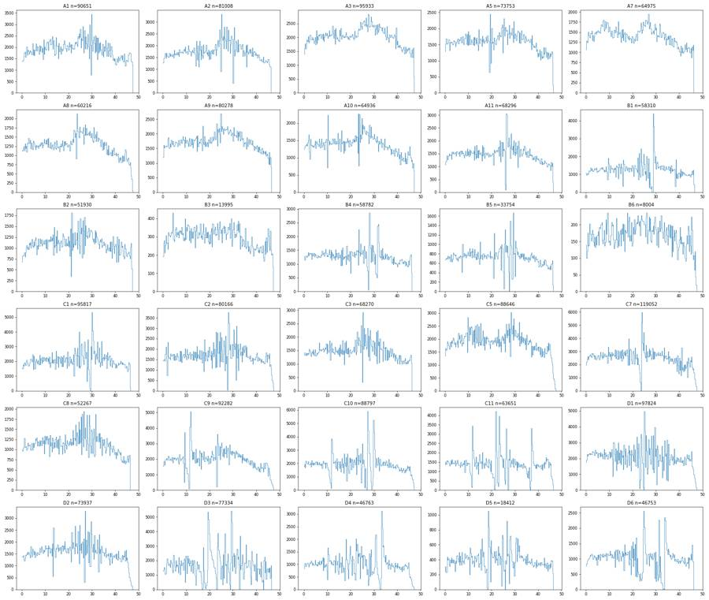
17
tool call · Bash
cd /task; cat > work/plots1.py <<'EOF'
import sys; sys.path.insert(0,'/task/work')
from load import *
import matplotlib; matplotlib.use('Agg'); import matplotlib.pyplot as plt
from matplotlib.colors import LogNorm
def grid(xc,yc,fn,xlim,ylim,xlog=False,ylog=False,bins=150,sel=None):
fig,axs=plt.subplots(5,6,figsize=(27,21))
for ax,(w,df) in zip(axs.ravel(),D.items()):
d=df if sel is None else sel(df)
x=d[xc].values; y=d[yc].values
if xlog: x=np.arcsinh(x/150)
if ylog: y=np.arcsinh(y/150)
ax.hist2d(x,y,bins=bins,range=[xlim,ylim],norm=LogNorm(),cmap='viridis')
r=lay[lay.well==w].iloc[0]
ax.set_title(f'{w} {r.treatment} {r.stain} n={len(d)}',fontsize=9)
fig.suptitle(f'{xc} vs {yc}'); plt.tight_layout(); plt.savefig(fn,dpi=55); plt.close()
grid('FSC-A','SSC-A','work/fsc_ssc.png',(0,1.05e6),(0,1.05e6))
grid('SSC-H','SSC-A','work/ssch_ssca.png',(0,1.05e6),(0,1.05e6))
EOF
python3 work/plots1.py18
tool call · Read
{
"file_path": "/task/work/fsc_ssc.png"
}19
tool call · Read
{
"file_path": "/task/work/ssch_ssca.png"
}20
tool output
(Bash completed with no output)
21
tool output
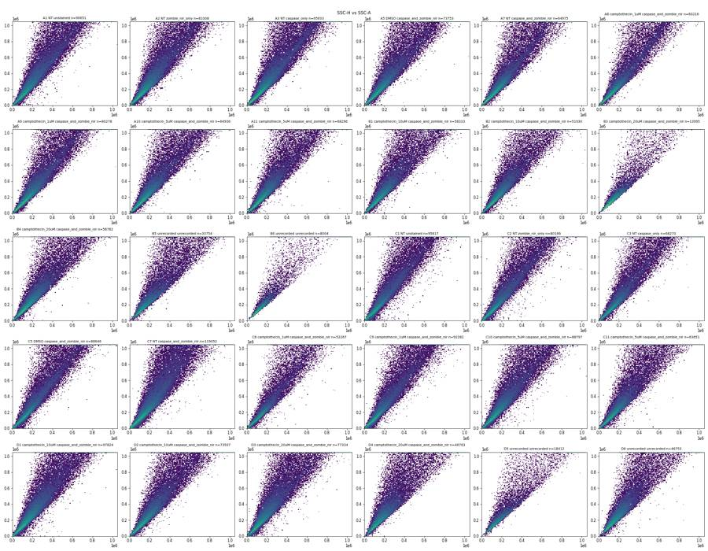
22
tool output
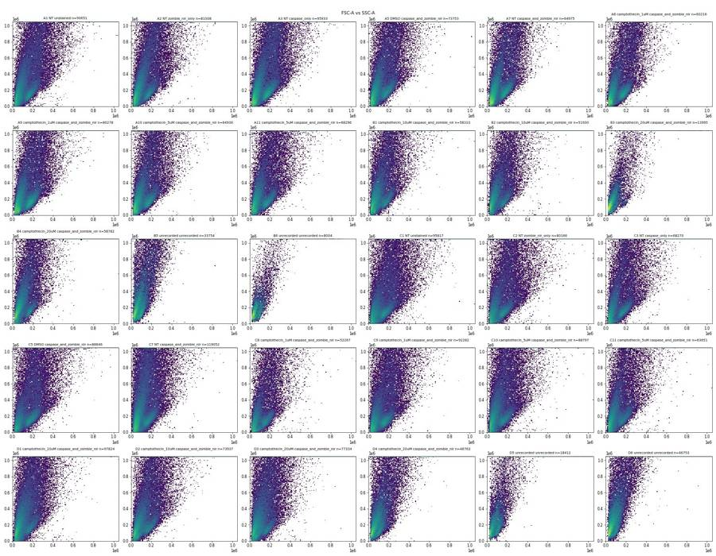
24
tool call · Bash
cd /task; cat > work/plots2.py <<'EOF'
import sys; sys.path.insert(0,'/task/work')
from load import *
import matplotlib; matplotlib.use('Agg'); import matplotlib.pyplot as plt
from matplotlib.colors import LogNorm
ws=['A1','A7','A10','B4','C1','C7','D3','D6']
fig,axs=plt.subplots(3,8,figsize=(34,13))
for j,w in enumerate(ws):
df=D[w]
axs[0,j].hist2d(df['FSC-A'],df['SSC-A'],bins=200,range=[(0,6e5),(0,1.05e6)],cmap='jet',norm=LogNorm()); axs[0,j].set_title(w+' FSC-A vs SSC-A')
axs[1,j].hist2d(df['FSC-A'],df['SSC-A'],bins=200,range=[(0,6e5),(0,1.05e6)],cmap='jet'); axs[1,j].set_title(w+' linear density')
m=(df['FSC-A']>100)&(df['SSC-A']>100)
axs[2,j].hist2d(np.log10(df['FSC-A'][m]),np.log10(df['SSC-A'][m]),bins=200,range=[(3.5,6.05),(3,6.05)],cmap='jet'); axs[2,j].set_title(w+' log10')
plt.tight_layout(); plt.savefig('work/scatter_detail.png',dpi=50)
EOF
python3 work/plots2.py25
tool call · Read
{
"file_path": "/task/work/scatter_detail.png"
}26
tool output
(Bash completed with no output)
27
tool output
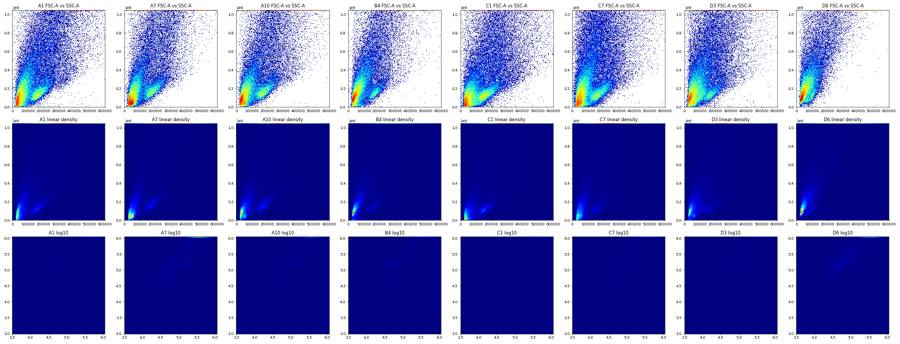
29
tool call · Bash
cd /task; cat > work/plots3.py <<'EOF'
import sys; sys.path.insert(0,'/task/work')
from load import *
import matplotlib; matplotlib.use('Agg'); import matplotlib.pyplot as plt
from matplotlib.colors import LogNorm
from scipy.stats import binned_statistic_2d
ws=['A1','A7','A10','B1','B4','B5','C7','D3']
fig,axs=plt.subplots(3,8,figsize=(36,14))
rng=[(0,5e5),(0,7e5)]
for j,w in enumerate(ws):
df=D[w]
axs[0,j].hist2d(df['FSC-A'],df['SSC-A'],bins=120,range=rng,cmap='jet',norm=LogNorm()); axs[0,j].set_title(w+' density(log)')
for k,c in enumerate(['RL3-A','BL1-A']):
st,xe,ye,_=binned_statistic_2d(df['FSC-A'],df['SSC-A'],np.arcsinh(df[c]/150)/np.log(10),'median',bins=60,range=rng)
cnt,_,_=np.histogram2d(df['FSC-A'],df['SSC-A'],bins=60,range=rng)
st[cnt<5]=np.nan
im=axs[k+1,j].imshow(st.T,origin='lower',extent=[*rng[0],*rng[1]],aspect='auto',cmap='jet',vmin=0,vmax=2.8)
axs[k+1,j].set_title(f'{w} median asinh10({c}/150)'); plt.colorbar(im,ax=axs[k+1,j])
plt.tight_layout(); plt.savefig('work/scatter_fluor.png',dpi=50)
EOF
python3 work/plots3.py30
tool call · Read
{
"file_path": "/task/work/scatter_fluor.png"
}31
tool output
(Bash completed with no output)
32
tool output
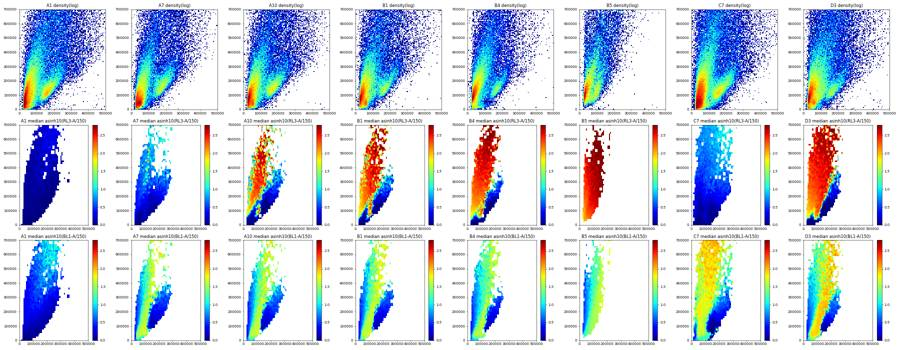
34
tool call · Bash
cd /task; cat > work/plots4.py <<'EOF'
import sys; sys.path.insert(0,'/task/work')
from load import *
import matplotlib; matplotlib.use('Agg'); import matplotlib.pyplot as plt
from matplotlib.colors import LogNorm
def tr(x): return np.arcsinh(x/150)/np.log(10)
def grid(xc,yc,fn,xlim,ylim,sel=None,ytr=False):
fig,axs=plt.subplots(5,6,figsize=(27,21))
for ax,(w,df) in zip(axs.ravel(),D.items()):
d=df if sel is None else df[sel(df)]
y=tr(d[yc]) if ytr else d[yc]
ax.hist2d(tr(d[xc]),y,bins=150,range=[xlim,ylim],norm=LogNorm(),cmap='jet')
r=lay[lay.well==w].iloc[0]
ax.set_title(f'{w} {r.treatment} {r.stain} n={len(d)}',fontsize=9)
ax.set_xticks(tr(np.array([0,1e3,1e4,1e5,1e6]))); ax.set_xticklabels(['0','1e3','1e4','1e5','1e6'])
if ytr: ax.set_yticks(tr(np.array([0,1e3,1e4,1e5,1e6]))); ax.set_yticklabels(['0','1e3','1e4','1e5','1e6'])
ax.grid(alpha=.3)
fig.suptitle(f'{xc} vs {yc}'); plt.tight_layout(); plt.savefig(fn,dpi=55); plt.close()
sel=lambda d:(d['FSC-A']>90000)&(d['FSC-A']<1e6)&(d['SSC-A']<1e6)
grid('RL3-A','SSC-A','work/rl3_ssc.png',(-1,4),(0,1.05e6),sel)
grid('BL1-A','SSC-A','work/bl1_ssc.png',(-1,4),(0,1.05e6),sel)
grid('BL1-A','RL3-A','work/bl1_rl3.png',(-1,4),(-1,4),sel,ytr=True)
EOF
python3 work/plots4.py35
tool call · Read
{
"file_path": "/task/work/rl3_ssc.png"
}36
tool call · Read
{
"file_path": "/task/work/bl1_ssc.png"
}37
tool call · Read
{
"file_path": "/task/work/bl1_rl3.png"
}38
tool output
(Bash completed with no output)
39
tool output
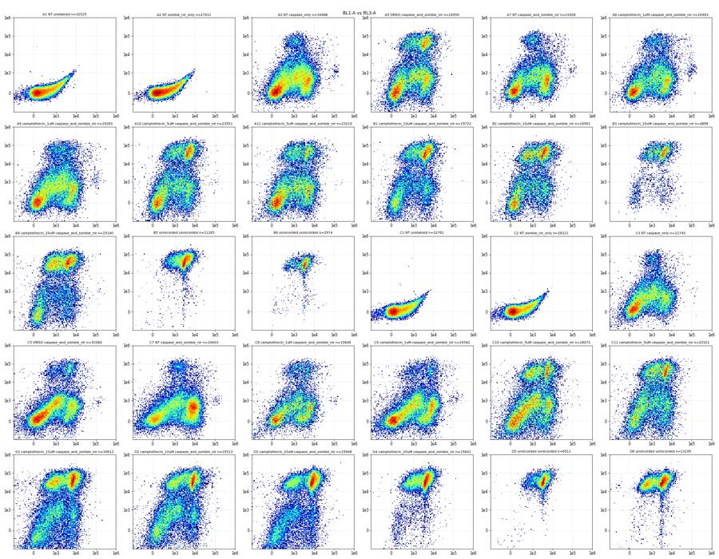
40
tool output
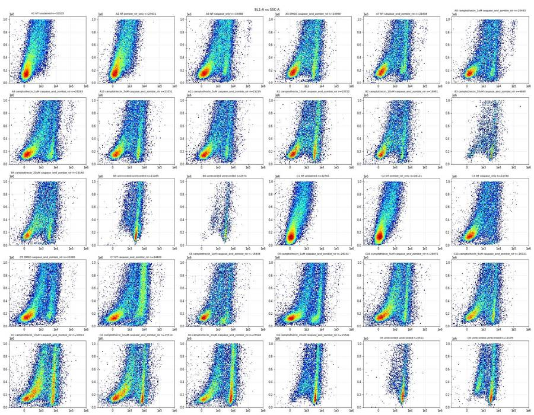
41
tool output
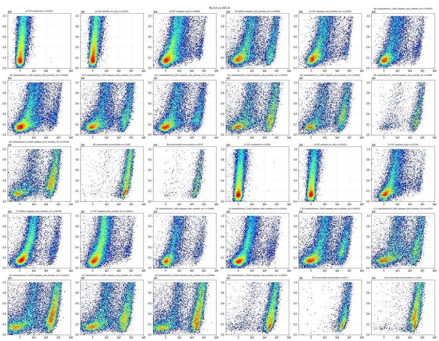
43
agent
Controls look odd (Zombie-only wells resemble unstained; caspase-only wells show a Zombie-bright population), so I'm verifying that with numbers and checking file metadata before placing gates.
44
tool call · Bash
cd /task; cat > work/qc3.py <<'EOF'
import sys; sys.path.insert(0,'/task/work')
from load import *
import flowio
pd.set_option('display.width',300); pd.set_option('display.max_columns',100)
# metadata diffs
rows=[]
for i,r in lay.iterrows():
t=flowio.FlowData('/task/inputs/raw/'+r.file).text
rows.append({k:t.get(k) for k in ['fil','wellid','btim','etim','vol','#coincidentcount','#flowrate','p2v','p3v','p4v','p5v','#tr1','lost','tot','p4s','p5s','#ptresult']}|{'well':r.well})
m=pd.DataFrame(rows); print(m.to_string())
# lobe stats: live lobe = FSC 120-300k, SSC< 0.9*FSC+50k
rows=[]
for w,df in D.items():
lobe=(df['FSC-A']>110000)&(df['FSC-A']<350000)&(df['SSC-A']<1.1*df['FSC-A'])&(df['SSC-A']>20000)
c=(df['FSC-A']>90000)&(df['FSC-A']<1e6)&(df['SSC-A']<1e6)
d=df[lobe]; e=df[c]
rows.append(dict(well=w,n_lobe=lobe.sum(),lobe_pct=round(lobe.mean()*100,1),
RL3_lobe_med=d['RL3-A'].median(),RL3_lobe_p90=d['RL3-A'].quantile(.9),BL1_lobe_med=d['BL1-A'].median(),BL1_lobe_p90=d['BL1-A'].quantile(.9),
pct_RL3_gt1e4_cells=round((e['RL3-A']>1e4).mean()*100,2),pct_RL3_gt1e4_all=round((df['RL3-A']>1e4).mean()*100,2),
pct_BL1_gt1500_lobe=round((d['BL1-A']>1500).mean()*100,2),pct_RL3_gt1e4_lobe=round((d['RL3-A']>1e4).mean()*100,2)))
print(pd.DataFrame(rows).to_string())
# duplicates across files
import itertools
keys={w:set(map(tuple,df[['FSC-A','SSC-A','BL1-A','RL3-A']].values[:5000])) for w,df in D.items()}
for a,b in itertools.combinations(D,2):
k=len(keys[a]&keys[b])
if k>5: print('dup',a,b,k)
EOF
python3 work/qc3.py45
tool output
fil wellid btim etim vol #coincidentcount #flowrate p2v p3v p4v p5v #tr1 lost tot p4s p5s #ptresult well 0 A1.fcs A1 14:47:52 14:48:40 159000 4247 200 55 350 250 300 OR_FSC,25000 0 90651 AAV-GFP-Caspase-A LiveDead-Zombie NIR-A Pass A1 1 A2.fcs A2 14:49:07 14:49:54 155000 3811 200 55 350 250 300 OR_FSC,25000 0 81008 AAV-GFP-Caspase-A LiveDead-Zombie NIR-A Pass A2 2 A3.fcs A3 14:50:20 14:51:08 157000 5071 200 55 350 250 300 OR_FSC,25000 0 95933 AAV-GFP-Caspase-A LiveDead-Zombie NIR-A Pass A3 3 A5.fcs A5 14:51:35 14:52:22 155000 4144 200 55 350 250 300 OR_FSC,25000 0 73753 AAV-GFP-Caspase-A LiveDead-Zombie NIR-A Pass A5 4 A7.fcs A7 14:52:49 14:53:36 155000 3144 200 55 350 250 300 OR_FSC,25000 0 64975 AAV-GFP-Caspase-A LiveDead-Zombie NIR-A Pass A7 5 A8.fcs A8 14:54:02 14:54:50 158000 2898 200 55 350 250 300 OR_FSC,25000 0 60216 AAV-GFP-Caspase-A LiveDead-Zombie NIR-A Pass A8 6 A9.fcs A9 14:55:17 14:56:04 155000 3428 200 55 350 250 300 OR_FSC,25000 0 80278 AAV-GFP-Caspase-A LiveDead-Zombie NIR-A Pass A9 7 A10.fcs A10 14:56:30 14:57:18 158000 2861 200 55 350 250 300 OR_FSC,25000 0 64936 AAV-GFP-Caspase-A LiveDead-Zombie NIR-A Pass A10 8 A11.fcs A11 14:57:45 14:58:32 155000 3380 200 55 350 250 300 OR_FSC,25000 0 68296 AAV-GFP-Caspase-A LiveDead-Zombie NIR-A Pass A11 9 B1.fcs B1 14:59:00 14:59:47 155000 2668 200 55 350 250 300 OR_FSC,25000 0 58310 AAV-GFP-Caspase-A LiveDead-Zombie NIR-A Pass B1 10 B2.fcs B2 15:00:13 15:01:01 158000 1945 200 55 350 250 300 OR_FSC,25000 0 51930 AAV-GFP-Caspase-A LiveDead-Zombie NIR-A Pass B2 11 B3.fcs B3 15:01:27 15:02:15 158000 134 200 55 350 250 300 OR_FSC,25000 0 13995 AAV-GFP-Caspase-A LiveDead-Zombie NIR-A Pass B3 12 B4.fcs B4 15:02:42 15:03:29 155000 1866 200 55 350 250 300 OR_FSC,25000 0 58782 AAV-GFP-Caspase-A LiveDead-Zombie NIR-A Pass B4 13 B5.fcs B5 15:03:56 15:04:43 155000 1077 200 55 350 250 300 OR_FSC,25000 0 33754 AAV-GFP-Caspase-A LiveDead-Zombie NIR-A Pass B5 14 B6.fcs B6 15:05:09 15:05:57 159000 81 200 55 350 250 300 OR_FSC,25000 0 8004 AAV-GFP-Caspase-A LiveDead-Zombie NIR-A Pass B6 15 C1.fcs C1 15:06:24 15:07:11 155000 6153 200 55 350 250 300 OR_FSC,25000 0 95817 AAV-GFP-Caspase-A LiveDead-Zombie NIR-A Pass C1 16 C2.fcs C2 15:07:37 15:08:25 159000 4357 200 55 350 250 300 OR_FSC,25000 0 80166 AAV-GFP-Caspase-A LiveDead-Zombie NIR-A Pass C2 17 C3.fcs C3 15:08:52 15:09:39 155000 3180 200 55 350 250 300 OR_FSC,25000 0 68270 AAV-GFP-Caspase-A LiveDead-Zombie NIR-A Pass C3 18 C5.fcs C5 15:10:05 15:10:53 159000 5380 200 55 350 250 300 OR_FSC,25000 0 88646 AAV-GFP-Caspase-A LiveDead-Zombie NIR-A Pass C5 19 C7.fcs C7 15:11:19 15:12:07 159000 9110 200 55 350 250 300 OR_FSC,25000 0 119052 AAV-GFP-Caspase-A LiveDead-Zombie NIR-A Pass C7 20 C8.fcs C8 15:12:35 15:13:21 155000 2542 200 55 350 250 300 OR_FSC,25000 0 52267 AAV-GFP-Caspase-A LiveDead-Zombie NIR-A Pass C8 21 C9.fcs C9 15:13:48 15:14:36 159000 5852 200 55 350 250 300 OR_FSC,25000 0 92282 AAV-GFP-Caspase-A LiveDead-Zombie NIR-A Pass C9 22 C10.fcs C10 15:15:02 15:15:50 158000 4556 200 55 350 250 300 OR_FSC,25000 0 88797 AAV-GFP-Caspase-A LiveDead-Zombie NIR-A Pass C10 23 C11.fcs C11 15:16:17 15:17:04 155000 2901 200 55 350 250 300 OR_FSC,25000 0 63651 AAV-GFP-Caspase-A LiveDead-Zombie NIR-A Pass C11 24 D1.fcs D1 15:17:30 15:18:18 159000 4462 200 55 350 250 300 OR_FSC,25000 0 97824 AAV-GFP-Caspase-A LiveDead-Zombie NIR-A Pass D1 25 D2.fcs D2 15:18:44 15:19:32 159000 2841 200 55 350 250 300 OR_FSC,25000 0 73937 AAV-GFP-Caspase-A LiveDead-Zombie NIR-A Pass D2 26 D3.fcs D3 15:19:59 15:20:46 155000 3701 200 55 350 250 300 OR_FSC,25000 0 77334 AAV-GFP-Caspase-A LiveDead-Zombie NIR-A Pass D3 27 D4.fcs D4 15:21:12 15:22:00 158000 1601 200 55 350 250 300 OR_FSC,25000 0 46763 AAV-GFP-Caspase-A LiveDead-Zombie NIR-A Pass D4 28 D5.fcs D5 15:22:27 15:23:15 155000 477 200 55 350 250 300 OR_FSC,25000 0 18412 AAV-GFP-Caspase-A LiveDead-Zombie NIR-A Pass D5 29 D6.fcs D6 15:23:41 15:24:28 155000 1579 200 55 350 250 300 OR_FSC,25000 0 46753 AAV-GFP-Caspase-A LiveDead-Zombie NIR-A Pass D6 well n_lobe lobe_pct RL3_lobe_med RL3_lobe_p90 BL1_lobe_med BL1_lobe_p90 pct_RL3_gt1e4_cells pct_RL3_gt1e4_all pct_BL1_gt1500_lobe pct_RL3_gt1e4_lobe 0 A1 8539 9.4 4.0 72.0 46.0 136.0 0.00 0.15 0.26 0.00 1 A2 6208 7.7 5.0 71.0 53.0 154.0 0.00 0.11 0.21 0.00 2 A3 10283 10. … [4,539 more characters not shown]
47
tool call · Bash
cd /task; python3 - <<'EOF' import flowkit as fk, inspect print(fk.__version__) print(inspect.signature(fk.gates.EllipsoidGate.__init__)); print(inspect.signature(fk.gates.RectangleGate.__init__)); print(inspect.signature(fk.gates.PolygonGate.__init__)) print(inspect.signature(fk.Dimension.__init__)) print(inspect.signature(fk.GatingStrategy.add_gate)); print(inspect.signature(fk.GatingStrategy.add_transform)); print(inspect.signature(fk.GatingStrategy.gate_sample)) print(inspect.signature(fk.transforms.LogicleTransform.__init__)); print(inspect.signature(fk.transforms.AsinhTransform.__init__)) print(inspect.signature(fk.export_gatingml)); print(inspect.signature(fk.parse_gating_xml)) print(inspect.getsource(fk.gates.EllipsoidGate.apply)) EOF
48
tool output
1.2.3
(self, gate_name, dimensions, coordinates, covariance_matrix, distance_square)
(self, gate_name, dimensions, use_complement=False)
(self, gate_name, dimensions, vertices, use_complement=False)
(self, dimension_id, compensation_ref='uncompensated', transformation_ref=None, range_min=None, range_max=None)
(self, gate, gate_path, sample_id=None)
(self, transform_id, transform)
(self, sample, cache_events=False, verbose=False)
(self, param_t, param_w, param_m, param_a)
(self, param_t, param_m, param_a)
(gating_strategy, file_handle, sample_id=None)
(xml_file_or_path)
def apply(self, df_events):
"""
Apply gate to events in given pandas DataFrame. The given DataFrame must have columns matching the
Dimension IDs for the Dimension instances defined for the gate.
:param df_events: pandas DataFrame with column labels matching Dimension IDs
:return: NumPy array of boolean values for each event (True is inside gate)
"""
dim_ids_ordered = []
for i, dim in enumerate(self.dimensions):
if isinstance(dim, RatioDimension):
dim_ids_ordered.append(dim.ratio_ref)
else:
dim_ids_ordered.append(dim.id)
results = gating.points_in_ellipsoid(
self.covariance_matrix,
self.coordinates,
self.distance_square,
df_events[dim_ids_ordered].values # send a NumPy array and not a DataFrame
)
return results50
tool call · Bash
cd /task; cat > work/ell.py <<'EOF'
import sys; sys.path.insert(0,'/task/work')
from load import *
import matplotlib; matplotlib.use('Agg'); import matplotlib.pyplot as plt
from matplotlib.colors import LogNorm
def ell(cx,cy,a,b,deg):
th=np.deg2rad(deg); R=np.array([[np.cos(th),-np.sin(th)],[np.sin(th),np.cos(th)]])
return np.array([cx,cy]), R@np.diag([a*a,b*b])@R.T
def inside(df,c,cov):
X=df[['FSC-A','SSC-A']].values-c; Ci=np.linalg.inv(cov)
return np.einsum('ij,jk,ik->i',X,Ci,X)<=1
def outline(c,cov,n=200):
t=np.linspace(0,2*np.pi,n); L=np.linalg.cholesky(cov)
return c+(L@np.vstack([np.cos(t),np.sin(t)])).T
cands={'E1':(230e3,330e3,330e3,105e3,66),'E2':(215e3,290e3,280e3,100e3,64),'E3':(250e3,380e3,400e3,125e3,68)}
if __name__=='__main__':
ws=['A1','A7','A10','B1','B4','B5','C1','C7','C10','D3','D4','D6']
fig,axs=plt.subplots(2,6,figsize=(30,11))
for ax,w in zip(axs.ravel(),ws):
df=D[w]
ax.hist2d(df['FSC-A'],df['SSC-A'],bins=160,range=[(0,7e5),(0,1.05e6)],cmap='jet',norm=LogNorm())
t=w
for (k,p),col in zip(cands.items(),['k','m','w']):
c,cov=ell(*p); o=outline(c,cov); ax.plot(o[:,0],o[:,1],col,lw=1.5)
t+=f' {k}:{inside(df,c,cov).mean()*100:.0f}%'
ax.set_title(t); ax.set_xlim(0,7e5); ax.set_ylim(0,1.05e6)
plt.tight_layout(); plt.savefig('work/ell.png',dpi=50)
for w in ['A1','A7','B4']:
df=D[w]
for lo,hi in [(0,150e3),(150e3,300e3),(300e3,500e3),(500e3,800e3)]:
d=df[(df['SSC-A']>lo)&(df['SSC-A']<hi)]
h,e=np.histogram(d['FSC-A'],bins=np.arange(20e3,300e3,10e3))
print(w,int(lo/1e3),int(hi/1e3),' '.join(map(str,h)))
EOF
python3 work/ell.py51
tool call · Read
{
"file_path": "/task/work/ell.png"
}52
tool output
A1 0 150 2823 5766 3945 2537 1830 1295 873 558 384 356 414 558 781 889 782 572 328 149 83 26 23 12 7 4 2 3 4 A1 150 300 109 662 1446 1558 1479 1257 1058 861 628 496 423 390 395 432 488 541 636 572 521 458 369 298 216 146 110 73 59 A1 300 500 30 75 165 242 366 480 526 527 558 481 469 371 324 293 261 253 201 199 210 205 225 222 200 211 207 168 117 A1 500 800 13 33 48 69 70 116 145 163 221 260 266 298 299 315 300 287 314 275 278 279 303 299 291 287 252 246 274 A7 0 150 1970 4649 4295 3486 2128 1142 593 318 248 193 187 242 308 374 373 292 159 66 30 13 8 5 3 2 0 2 0 A7 150 300 96 391 836 992 1059 1015 883 654 496 309 259 298 359 416 462 579 612 591 532 429 402 266 192 123 78 38 34 A7 300 500 17 63 110 177 250 327 362 402 399 369 318 274 217 170 136 113 110 121 130 144 140 163 164 148 141 142 110 A7 500 800 7 23 39 53 76 95 109 138 161 175 219 225 254 261 212 183 182 181 188 158 181 172 175 144 164 161 138 B4 0 150 2797 5486 3402 2096 1103 623 409 336 251 189 161 188 283 310 325 248 117 64 12 9 4 3 2 1 2 1 1 B4 150 300 147 876 1594 1796 1687 1489 1159 776 555 404 328 273 263 261 306 337 369 321 287 230 173 96 81 42 37 11 18 B4 300 500 25 108 185 253 381 391 513 548 577 477 493 394 335 268 211 172 165 144 106 111 120 108 116 92 98 51 57 B4 500 800 16 50 65 65 85 124 135 178 201 236 281 301 281 270 256 238 224 228 208 167 166 146 157 115 119 89 60
53
tool output
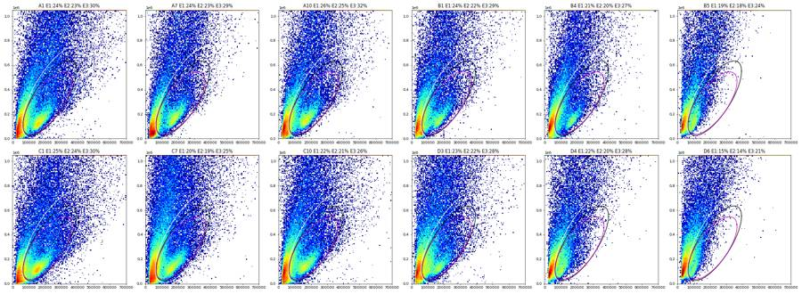
55
tool call · Bash
cd /task; cat > work/sing.py <<'EOF'
import sys; sys.path.insert(0,'/task/work')
from load import *
from ell import *
import matplotlib; matplotlib.use('Agg'); import matplotlib.pyplot as plt
from matplotlib.colors import LogNorm
c,cov=ell(*cands['E1'])
ws=['A1','A7','A10','B4','B5','C1','C7','C10','D3','D6']
fig,axs=plt.subplots(3,10,figsize=(50,15))
for j,w in enumerate(ws):
df=D[w]; d=df[inside(df,c,cov)]
r=d['SSC-A']/d['SSC-H']
print(w,len(d),'ratio pct 1,5,25,50,75,90,95,99:',np.round(np.percentile(r,[1,5,25,50,75,90,95,99]),3))
for lo,hi in [(50e3,150e3),(150e3,300e3),(300e3,650e3)]:
m=(d['SSC-A']>lo)&(d['SSC-A']<hi); print(' SSC-A',lo,hi,m.sum(),np.round(np.percentile(r[m],[1,5,25,50,75,90,95,99]),3))
axs[0,j].hist2d(d['SSC-H'],d['SSC-A'],bins=150,range=[(0,5e5),(0,7e5)],cmap='jet',norm=LogNorm()); axs[0,j].set_title(w)
axs[1,j].hist2d(d['SSC-A'],r,bins=150,range=[(0,7e5),(0.9,2.5)],cmap='jet',norm=LogNorm()); axs[1,j].set_title('SSC-A vs A/H')
axs[2,j].hist(r,bins=np.linspace(0.9,2.5,161)); axs[2,j].set_yscale('log')
plt.tight_layout(); plt.savefig('work/sing.png',dpi=45)
EOF
python3 work/sing.py56
tool call · Read
{
"file_path": "/task/work/sing.png"
}57
tool output
A1 22097 ratio pct 1,5,25,50,75,90,95,99: [0.788 1.009 1.133 1.231 1.403 1.656 1.869 2.35 ] SSC-A 50000.0 150000.0 7770 [0.693 0.916 1.071 1.129 1.202 1.324 1.45 1.803] SSC-A 150000.0 300000.0 9111 [0.989 1.077 1.168 1.242 1.375 1.604 1.782 2.211] SSC-A 300000.0 650000.0 4950 [1.102 1.204 1.337 1.468 1.679 1.975 2.197 2.806] A7 15760 ratio pct 1,5,25,50,75,90,95,99: [0.931 1.052 1.15 1.234 1.373 1.595 1.798 2.319] SSC-A 50000.0 150000.0 4552 [0.812 0.998 1.093 1.149 1.237 1.408 1.54 1.951] SSC-A 150000.0 300000.0 8014 [1.027 1.086 1.166 1.229 1.321 1.493 1.665 2.165] SSC-A 300000.0 650000.0 3038 [1.099 1.203 1.328 1.438 1.636 1.919 2.17 2.725] A10 17016 ratio pct 1,5,25,50,75,90,95,99: [0.902 1.044 1.137 1.221 1.372 1.633 1.863 2.405] SSC-A 50000.0 150000.0 5048 [0.789 0.977 1.084 1.132 1.203 1.332 1.457 1.9 ] SSC-A 150000.0 300000.0 8313 [1.018 1.072 1.159 1.221 1.328 1.525 1.719 2.197] SSC-A 300000.0 650000.0 3514 [1.093 1.177 1.313 1.447 1.681 2.014 2.276 2.878] B4 12222 ratio pct 1,5,25,50,75,90,95,99: [0.898 1.043 1.135 1.223 1.379 1.639 1.864 2.444] SSC-A 50000.0 150000.0 3210 [0.762 0.976 1.08 1.126 1.198 1.326 1.447 1.847] SSC-A 150000.0 300000.0 6195 [1.017 1.067 1.153 1.221 1.335 1.544 1.736 2.275] SSC-A 300000.0 650000.0 2637 [1.103 1.173 1.297 1.432 1.666 2.004 2.234 2.946] B5 6277 ratio pct 1,5,25,50,75,90,95,99: [0.932 1.042 1.136 1.266 1.481 1.803 2.027 2.575] SSC-A 50000.0 150000.0 2043 [0.761 1.001 1.088 1.158 1.267 1.408 1.534 1.852] SSC-A 150000.0 300000.0 2948 [1.002 1.054 1.155 1.291 1.487 1.764 1.947 2.341] SSC-A 300000.0 650000.0 1260 [1.068 1.139 1.304 1.513 1.837 2.221 2.499 3.077] C1 24276 ratio pct 1,5,25,50,75,90,95,99: [0.688 0.949 1.118 1.214 1.388 1.633 1.834 2.303] SSC-A 50000.0 150000.0 10697 [0.675 0.875 1.068 1.129 1.213 1.378 1.502 1.866] SSC-A 150000.0 300000.0 8130 [0.934 1.071 1.171 1.242 1.374 1.623 1.813 2.233] SSC-A 300000.0 650000.0 4699 [1.097 1.203 1.339 1.47 1.675 1.956 2.176 2.716] C7 24028 ratio pct 1,5,25,50,75,90,95,99: [0.702 0.943 1.106 1.202 1.365 1.621 1.853 2.413] SSC-A 50000.0 150000.0 9471 [0.657 0.853 1.049 1.117 1.199 1.364 1.511 1.943] SSC-A 150000.0 300000.0 9847 [0.907 1.04 1.15 1.223 1.34 1.584 1.782 2.3 ] SSC-A 300000.0 650000.0 4132 [1.081 1.173 1.329 1.467 1.685 2.022 2.291 2.905] C10 19161 ratio pct 1,5,25,50,75,90,95,99: [0.742 0.991 1.127 1.218 1.381 1.648 1.873 2.443] SSC-A 50000.0 150000.0 6291 [0.619 0.877 1.065 1.124 1.2 1.339 1.461 1.914] SSC-A 150000.0 300000.0 8718 [0.955 1.064 1.157 1.227 1.34 1.554 1.753 2.246] SSC-A 300000.0 650000.0 3889 [1.053 1.174 1.319 1.466 1.699 2.027 2.258 2.977] D3 17848 ratio pct 1,5,25,50,75,90,95,99: [0.744 0.988 1.12 1.225 1.441 1.768 2.036 2.745] SSC-A 50000.0 150000.0 6275 [0.693 0.895 1.06 1.121 1.202 1.362 1.519 1.884] SSC-A 150000.0 300000.0 7635 [0.951 1.057 1.16 1.243 1.419 1.703 1.923 2.481] SSC-A 300000.0 650000.0 3753 [1.072 1.173 1.334 1.511 1.819 2.266 2.594 3.241] D6 7114 ratio pct 1,5,25,50,75,90,95,99: [0.852 1.027 1.124 1.247 1.455 1.737 1.956 2.566] SSC-A 50000.0 150000.0 1890 [0.682 0.97 1.059 1.112 1.193 1.327 1.435 1.789] SSC-A 150000.0 300000.0 3664 [0.997 1.052 1.15 1.26 1.424 1.643 1.821 2.306] SSC-A 300000.0 650000.0 1527 [1.093 1.167 1.33 1.509 1.786 2.122 2.427 2.989]
58
tool output
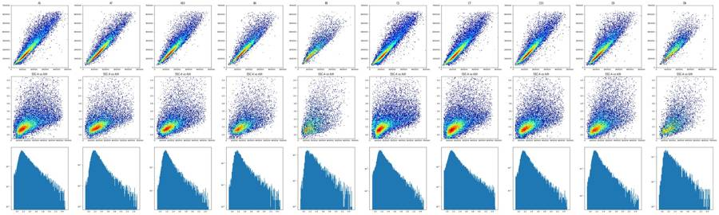
60
agent
Scatter and singlet geometry are worked out; now building the full FlowKit gate set and looking at RL3/BL1 histograms on singlets to place the fluorescence cut-offs.
61
tool call · Bash
cd /task; cat > work/fluor.py <<'EOF'
import sys; sys.path.insert(0,'/task/work')
from load import *
from ell import *
import matplotlib; matplotlib.use('Agg'); import matplotlib.pyplot as plt
from matplotlib.path import Path
def tr(x): return np.arcsinh(np.asarray(x)/150)/np.log(10)
SING=np.array([(15e3,4.5e3),(15e3,12.5e3),(500e3,740e3),(500e3,475e3)])
def singles(df,ek='E1'):
c,cov=ell(*cands[ek]); m=inside(df,c,cov)
s=Path(SING).contains_points(df[['SSC-H','SSC-A']].values)
return m, m&s
if __name__=='__main__':
ek=sys.argv[1] if len(sys.argv)>1 else 'E1'
bins=np.linspace(-1.2,4,131)
for ch in ['RL3-A','BL1-A']:
fig,axs=plt.subplots(5,6,figsize=(27,18))
for ax,(w,df) in zip(axs.ravel(),D.items()):
m,s=singles(df,ek); d=df[s]
ax.hist(tr(d[ch]),bins=bins,histtype='stepfilled',alpha=.6)
if ch=='BL1-A':
live=d[d['RL3-A']<5000]; ax.hist(tr(live[ch]),bins=bins,histtype='step',color='r')
r=lay[lay.well==w].iloc[0]
ax.set_title(f'{w} {r.treatment} {r.stain} cells={m.sum()} sing={s.sum()} ({s.sum()/m.sum()*100:.0f}%)',fontsize=9)
ax.set_xticks(tr([0,300,1e3,3e3,1e4,3e4,1e5,1e6])); ax.set_xticklabels(['0','300','1e3','3e3','1e4','3e4','1e5','1e6'],fontsize=7); ax.grid(alpha=.4)
plt.tight_layout(); plt.savefig(f'work/hist_{ch[:3]}_{ek}.png',dpi=55); plt.close()
# numeric: unstained percentiles on singlets
for w in ['A1','C1','A2','C2']:
m,s=singles(D[w],ek); d=D[w][s]
print(w,'RL3 p50,95,99,99.5,99.9,max',np.percentile(d['RL3-A'],[50,95,99,99.5,99.9,100]).round(),'BL1',np.percentile(d['BL1-A'],[50,95,99,99.5,99.9,100]).round())
# pooled valley search in stained wells
for grp,ws in [('NT/DMSO',['A5','A7','C5','C7','A3','C3']),('treated',['A8','A9','A10','A11','B1','B2','B4','C8','C9','C10','C11','D1','D2','D3'])]:
x=np.concatenate([D[w][singles(D[w],ek)[1]]['RL3-A'].values for w in ws])
h,e=np.histogram(tr(x),bins=np.linspace(0.5,3,51))
print(grp,'RL3 hist (asinh10 bins from 0.5 to 3; raw edges):');
for i in range(len(h)): print(f' {150*np.sinh(e[i]*np.log(10)):9.0f} {h[i]}')
x=np.concatenate([D[w][singles(D[w],ek)[1]].query('`RL3-A`<5000')['BL1-A'].values for w in ws])
h,e=np.histogram(tr(x),bins=np.linspace(0.3,2.3,41))
print(grp,'BL1 (RL3<5000) hist:')
for i in range(len(h)): print(f' {150*np.sinh(e[i]*np.log(10)):9.0f} {h[i]}')
EOF
python3 work/fluor.py E162
tool output
A1 RL3 p50,95,99,99.5,99.9,max [1.4000e+01 1.2900e+02 2.8000e+02 3.6400e+02 6.5000e+02 2.7492e+04] BL1 [ 69. 807. 2062. 2619. 4514. 8234.]
C1 RL3 p50,95,99,99.5,99.9,max [8.0000e+00 1.0500e+02 1.7000e+02 2.0800e+02 3.2700e+02 2.3591e+04] BL1 [ 49. 425. 965. 1255. 1946. 5587.]
A2 RL3 p50,95,99,99.5,99.9,max [ 14. 124. 248. 310. 523. 1519.] BL1 [ 83. 832. 1840. 2385. 3942. 9312.]
C2 RL3 p50,95,99,99.5,99.9,max [ 7. 104. 167. 217. 356. 812.] BL1 [ 51. 408. 978. 1245. 2126. 5900.]
NT/DMSO RL3 hist (asinh10 bins from 0.5 to 3; raw edges):
213 2408
245 2254
280 2008
318 1739
361 1664
408 1450
461 1353
520 1246
586 1131
660 978
742 1006
835 850
938 757
1054 665
1184 628
1329 537
1493 454
1676 398
1881 380
2111 326
2369 284
2659 272
2984 275
3348 218
3757 216
4216 217
4731 189
5309 176
5957 179
6684 177
7499 180
8414 179
9441 172
10594 178
11886 212
13337 230
14964 248
16790 281
18839 317
21138 347
23717 377
26611 400
29858 384
33501 385
37589 368
42175 331
47322 274
53096 207
59575 168
66844 122
NT/DMSO BL1 (RL3<5000) hist:
112 3927
134 3763
159 3446
185 3153
213 2560
245 2286
280 1978
318 1645
361 1398
408 1242
461 1028
520 908
586 898
660 826
742 795
835 785
938 771
1054 746
1184 724
1329 698
1493 693
1676 668
1881 1059
2111 1830
2369 2432
2659 2470
2984 2293
3348 2039
3757 1564
4216 1421
4731 1335
5309 1240
5957 1086
6684 885
7499 718
8414 551
9441 411
10594 310
11886 204
13337 152
treated RL3 hist (asinh10 bins from 0.5 to 3; raw edges):
213 3367
245 3176
280 2883
318 2818
361 2602
408 2422
461 2309
520 2145
586 1922
660 1909
742 1707
835 1615
938 1533
1054 1345
1184 1229
1329 1100
1493 1078
1676 990
1881 949
2111 804
2369 778
2659 761
2984 713
3348 664
3757 681
4216 678
4731 646
5309 739
5957 810
6684 850
7499 1014
8414 1137
9441 1332
10594 1582
11886 1915
13337 2073
14964 2339
16790 2553
18839 2642
21138 2604
23717 2542
26611 2386
29858 2198
33501 1993
37589 1779
42175 1429
47322 1114
53096 870
59575 661
66844 453
treated BL1 (RL3<5000) hist:
112 5929
134 5712
159 5300
185 5021
213 4536
245 4352
280 4034
318 3375
361 3117
408 2620
461 2425
520 1938
586 1803
660 1604
742 1440
835 1378
938 1295
1054 1250
1184 1273
1329 1288
1493 1287
1676 1373
1881 1528
2111 1875
2369 2473
2659 2906
2984 3145
3348 3211
3757 3011
4216 2692
4731 2521
5309 2329
5957 2095
6684 1838
7499 1329
8414 951
9441 743
10594 583
11886 463
13337 37063
tool call · Read
{
"file_path": "/task/work/hist_RL3_E1.png"
}64
tool output
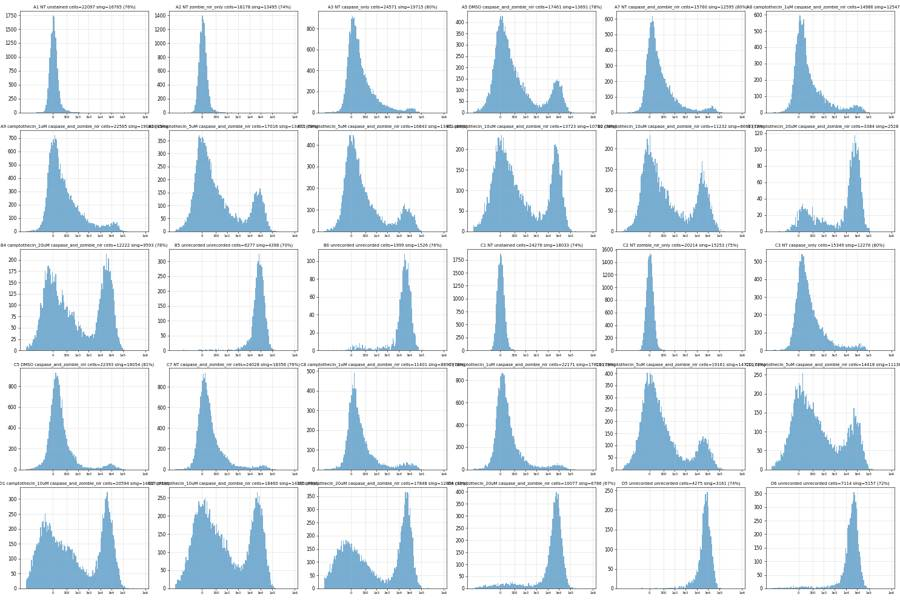
65
tool call · Read
{
"file_path": "/task/work/hist_BL1_E1.png"
}66
tool output
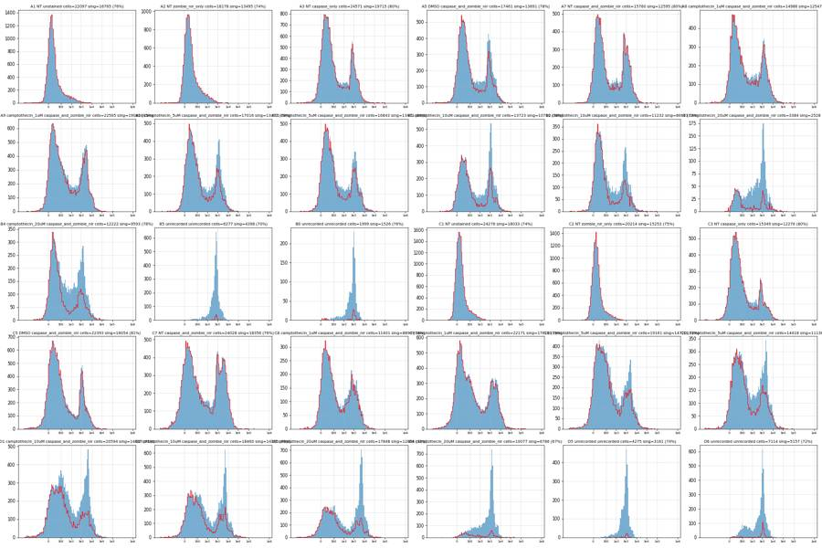
68
tool call · Bash
cd /task; cat > work/cmp.py <<'EOF'
import sys; sys.path.insert(0,'/task/work')
from load import *
from ell import *
import ell as E
from fluor import SING
from matplotlib.path import Path
E.cands.update({'E4':(235e3,300e3,300e3,95e3,62),'E5':(240e3,310e3,310e3,90e3,60),'LOBE':(200e3,170e3,170e3,55e3,50)})
for k,p in E.cands.items():
c,cov=ell(*p); o=outline(c,cov,2000)
s=f'{k}: '
for y in [50e3,100e3,150e3,200e3,300e3,400e3,500e3]:
m=np.abs(o[:,1]-y)<3e3
s+=f' y={int(y/1e3)}k x=[{o[m,0].min()/1e3:.0f},{o[m,0].max()/1e3:.0f}]' if m.any() else ''
print(s, 'ymin/max',o[:,1].min().round(),o[:,1].max().round(),'xmin/max',o[:,0].min().round(),o[:,0].max().round())
ws=['A1','A7','A9','A10','B1','B4','B5','C1','C7','C9','C10','D1','D3','D4','D6']
for k,p in E.cands.items():
c,cov=ell(*p); row=[]
for w in ws:
df=D[w]; m=inside(df,c,cov); s=m&Path(SING).contains_points(df[['SSC-H','SSC-A']].values)
l=s&(df['RL3-A']<5000)&(df['RL3-A']>-20000); cp=l&(df['BL1-A']>=1800)
row.append(f'{w}:{m.mean()*100:.0f}/{l.sum()/s.sum()*100:.0f}/{cp.sum()/l.sum()*100:.0f}')
print(k,' '.join(row))
EOF
python3 work/cmp.py69
tool output
E1: y=50k x=[74,168] y=100k x=[65,216] y=150k x=[67,253] y=200k x=[76,283] y=300k x=[104,333] y=400k x=[145,369] y=500k x=[200,391] ymin/max 25520.0 634480.0 xmin/max 65025.0 394976.0 E2: y=50k x=[76,158] y=100k x=[63,212] y=150k x=[65,251] y=200k x=[75,282] y=300k x=[109,330] y=400k x=[160,360] y=500k x=[236,365] ymin/max 34548.0 545452.0 xmin/max 62867.0 367133.0 E3: y=50k x=[68,197] y=100k x=[61,240] y=150k x=[62,275] y=200k x=[68,304] y=300k x=[90,353] y=400k x=[123,392] y=500k x=[165,420] ymin/max 6182.0 753818.0 xmin/max 60566.0 439434.0 E4: y=50k x=[78,161] y=100k x=[71,215] y=150k x=[77,255] y=200k x=[89,288] y=300k x=[128,342] y=400k x=[181,381] y=500k x=[255,399] ymin/max 31388.0 568613.0 xmin/max 71073.0 398927.0 E5: y=50k x=[74,141] y=100k x=[67,200] y=150k x=[74,243] y=200k x=[89,279] y=300k x=[131,339] y=400k x=[188,384] y=500k x=[262,412] ymin/max 37787.0 582213.0 xmin/max 66507.0 413494.0 LOBE: y=50k x=[84,152] y=100k x=[91,213] y=150k x=[116,257] y=200k x=[151,290] y=300k x=[265,312] ymin/max 35059.0 304941.0 xmin/max 82885.0 317115.0 E1 A1:24/100/1 A7:24/95/31 A9:28/92/29 A10:26/80/21 B1:24/70/25 B4:21/64/22 B5:19/4/78 C1:25/100/0 C7:20/96/36 C9:24/95/27 C10:22/84/21 D1:21/65/23 D3:23/58/26 D4:22/16/35 D6:15/8/76 E2 A1:23/100/1 A7:23/95/31 A9:27/93/28 A10:25/80/21 B1:22/71/25 B4:20/64/21 B5:18/4/76 C1:24/100/0 C7:19/96/37 C9:23/95/27 C10:21/84/21 D1:20/65/22 D3:22/59/26 D4:20/16/34 D6:14/9/75 E3 A1:30/100/2 A7:29/92/35 A9:33/90/31 A10:32/76/24 B1:29/66/28 B4:27/56/25 B5:24/4/71 C1:30/100/0 C7:25/94/42 C9:28/94/29 C10:26/79/23 D1:27/60/26 D3:28/56/28 D4:28/15/35 D6:21/7/70 E4 A1:20/100/1 A7:20/98/24 A9:24/96/25 A10:21/85/17 B1:19/77/20 B4:15/76/17 B5:14/5/81 C1:22/100/0 C7:16/98/28 C9:20/97/25 C10:17/89/18 D1:16/73/19 D3:18/64/22 D4:16/19/33 D6:9/11/83 E5 A1:20/100/1 A7:20/98/26 A9:24/96/27 A10:22/85/19 B1:19/77/22 B4:15/75/18 B5:14/5/80 C1:22/100/0 C7:16/98/30 C9:21/97/25 C10:18/89/19 D1:16/72/19 D3:19/64/24 D4:16/18/34 D6:10/11/82 LOBE A1:11/100/0 A7:10/100/9 A9:14/99/16 A10:12/94/9 B1:9/89/8 B4:7/91/7 B5:3/5/70 C1:13/100/0 C7:9/100/11 C9:13/99/18 C10:10/96/11 D1:8/86/10 D3:8/81/10 D4:5/27/25 D6:2/21/82
71
tool call · Bash
cd /task; cat > work/stripe.py <<'EOF'
import sys; sys.path.insert(0,'/task/work')
from load import *
import matplotlib; matplotlib.use('Agg'); import matplotlib.pyplot as plt
def tr(x): return np.arcsinh(np.asarray(x)/150)/np.log(10)
ws=['A1','A7','C7','A10','B4','D3','B5']
fig,axs=plt.subplots(3,7,figsize=(35,13))
fb=[(25e3,50e3),(50e3,75e3),(75e3,100e3),(100e3,130e3),(130e3,200e3),(200e3,400e3)]
for j,w in enumerate(ws):
df=D[w]; df=df[(df['SSC-A']<1e6)&(df['SSC-A']>0)]
for lo,hi in fb:
d=df[(df['FSC-A']>=lo)&(df['FSC-A']<hi)]
axs[0,j].hist(tr(d['BL1-A']),bins=np.linspace(-0.5,3,100),histtype='step',density=True,label=f'{int(lo/1e3)}-{int(hi/1e3)}k n={len(d)}')
axs[1,j].hist(tr(d['RL3-A']),bins=np.linspace(-0.5,3.5,100),histtype='step',density=True)
print(w,f'FSC {int(lo/1e3)}-{int(hi/1e3)}k n={len(d)} BL1>=1800: {(d["BL1-A"]>=1800).mean()*100:.1f}% RL3>=5000: {(d["RL3-A"]>=5000).mean()*100:.1f}% SSC med {d["SSC-A"].median():.0f}')
axs[0,j].legend(fontsize=7); axs[0,j].set_title(w+' BL1 by FSC bin'); axs[1,j].set_title(w+' RL3 by FSC bin')
pos=df[(df['BL1-A']>=1800)&(df['RL3-A']<5000)]; neg=df[(df['BL1-A']<1000)&(df['RL3-A']<5000)]; dead=df[df['RL3-A']>=5000]
for d,l in [(pos,'BL1+ RL3-'),(neg,'BL1- RL3-'),(dead,'RL3+')]:
axs[2,j].hist(d['FSC-A'],bins=np.linspace(0,4e5,100),histtype='step',label=f'{l} n={len(d)}')
axs[2,j].legend(fontsize=7); axs[2,j].set_title(w+' FSC-A by fluor class')
plt.tight_layout(); plt.savefig('work/stripe.png',dpi=50)
EOF
python3 work/stripe.py72
tool call · Read
{
"file_path": "/task/work/stripe.png"
}73
tool output
A1 FSC 25-50k n=14713 BL1>=1800: 0.1% RL3>=5000: 0.0% SSC med 84055 A1 FSC 50-75k n=9838 BL1>=1800: 0.2% RL3>=5000: 0.0% SSC med 146738 A1 FSC 75-100k n=6312 BL1>=1800: 0.6% RL3>=5000: 0.0% SSC med 211367 A1 FSC 100-130k n=5116 BL1>=1800: 2.0% RL3>=5000: 0.0% SSC med 285810 A1 FSC 130-200k n=12185 BL1>=1800: 3.3% RL3>=5000: 0.0% SSC med 199472 A1 FSC 200-400k n=11547 BL1>=1800: 10.6% RL3>=5000: 0.0% SSC med 523824 A7 FSC 25-50k n=12256 BL1>=1800: 32.5% RL3>=5000: 9.5% SSC med 67882 A7 FSC 50-75k n=9626 BL1>=1800: 54.6% RL3>=5000: 9.7% SSC med 106510 A7 FSC 75-100k n=4763 BL1>=1800: 52.9% RL3>=5000: 16.4% SSC med 213727 A7 FSC 100-130k n=3481 BL1>=1800: 54.8% RL3>=5000: 18.2% SSC med 306166 A7 FSC 130-200k n=8436 BL1>=1800: 34.5% RL3>=5000: 8.5% SSC med 222154 A7 FSC 200-400k n=7767 BL1>=1800: 40.6% RL3>=5000: 6.6% SSC med 480992 C7 FSC 25-50k n=19834 BL1>=1800: 42.9% RL3>=5000: 5.6% SSC med 80126 C7 FSC 50-75k n=17637 BL1>=1800: 67.4% RL3>=5000: 5.7% SSC med 130994 C7 FSC 75-100k n=8601 BL1>=1800: 68.2% RL3>=5000: 9.7% SSC med 212876 C7 FSC 100-130k n=6994 BL1>=1800: 64.9% RL3>=5000: 10.6% SSC med 314092 C7 FSC 130-200k n=13549 BL1>=1800: 44.2% RL3>=5000: 5.6% SSC med 223202 C7 FSC 200-400k n=9976 BL1>=1800: 41.4% RL3>=5000: 3.9% SSC med 467749 A10 FSC 25-50k n=12227 BL1>=1800: 11.3% RL3>=5000: 35.3% SSC med 89962 A10 FSC 50-75k n=8538 BL1>=1800: 37.0% RL3>=5000: 38.3% SSC med 138610 A10 FSC 75-100k n=4897 BL1>=1800: 45.2% RL3>=5000: 51.3% SSC med 217191 A10 FSC 100-130k n=3996 BL1>=1800: 53.3% RL3>=5000: 55.2% SSC med 290452 A10 FSC 130-200k n=9427 BL1>=1800: 33.9% RL3>=5000: 26.0% SSC med 211899 A10 FSC 200-400k n=7748 BL1>=1800: 41.9% RL3>=5000: 22.1% SSC med 466886 B4 FSC 25-50k n=14476 BL1>=1800: 9.0% RL3>=5000: 56.7% SSC med 102548 B4 FSC 50-75k n=8915 BL1>=1800: 24.7% RL3>=5000: 69.0% SSC med 170293 B4 FSC 75-100k n=5341 BL1>=1800: 34.8% RL3>=5000: 74.0% SSC med 242388 B4 FSC 100-130k n=4297 BL1>=1800: 45.6% RL3>=5000: 74.7% SSC med 323962 B4 FSC 130-200k n=7788 BL1>=1800: 38.0% RL3>=5000: 47.7% SSC med 329752 B4 FSC 200-400k n=4894 BL1>=1800: 49.0% RL3>=5000: 41.2% SSC med 551121 D3 FSC 25-50k n=13259 BL1>=1800: 16.4% RL3>=5000: 55.1% SSC med 103515 D3 FSC 50-75k n=10299 BL1>=1800: 42.7% RL3>=5000: 61.1% SSC med 150469 D3 FSC 75-100k n=6538 BL1>=1800: 53.2% RL3>=5000: 72.0% SSC med 208480 D3 FSC 100-130k n=5703 BL1>=1800: 61.4% RL3>=5000: 74.0% SSC med 261569 D3 FSC 130-200k n=9529 BL1>=1800: 48.4% RL3>=5000: 50.6% SSC med 313190 D3 FSC 200-400k n=7588 BL1>=1800: 54.8% RL3>=5000: 46.3% SSC med 529192 B5 FSC 25-50k n=6222 BL1>=1800: 4.4% RL3>=5000: 87.3% SSC med 131350 B5 FSC 50-75k n=4452 BL1>=1800: 19.5% RL3>=5000: 95.4% SSC med 201484 B5 FSC 75-100k n=3796 BL1>=1800: 48.0% RL3>=5000: 96.3% SSC med 242906 B5 FSC 100-130k n=3578 BL1>=1800: 66.8% RL3>=5000: 97.1% SSC med 285702 B5 FSC 130-200k n=3841 BL1>=1800: 77.7% RL3>=5000: 98.0% SSC med 482299 B5 FSC 200-400k n=2262 BL1>=1800: 94.4% RL3>=5000: 96.9% SSC med 743086
74
tool output
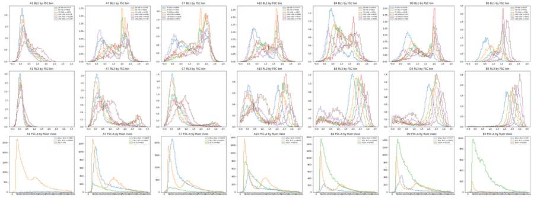
76
agent
Deciding the Cells ellipse now (left edge on the valley between low-FSC debris and the intact-cell lobe), then writing the final FlowKit strategy and outputs.
77
tool call · Bash
cd /task; cat > work/cmp2.py <<'EOF'
import sys; sys.path.insert(0,'/task/work')
from load import *
from ell import *
from fluor import SING
from matplotlib.path import Path
import matplotlib; matplotlib.use('Agg'); import matplotlib.pyplot as plt
from matplotlib.colors import LogNorm
C={'F1':(255e3,290e3,290e3,80e3,58),'F2':(250e3,280e3,285e3,85e3,57),'F3':(265e3,310e3,310e3,88e3,58)}
for k,p in C.items():
c,cov=ell(*p); o=outline(c,cov,4000); s=f'{k}: '
for y in [50e3,100e3,150e3,200e3,300e3,400e3,500e3]:
m=np.abs(o[:,1]-y)<2e3
s+=f' y={int(y/1e3)}k x=[{o[m,0].min()/1e3:.0f},{o[m,0].max()/1e3:.0f}]' if m.any() else ''
print(s,'y',o[:,1].min().round(),o[:,1].max().round(),'x',o[:,0].min().round(),o[:,0].max().round())
ws=['A1','A7','A9','A10','B1','B4','B5','C1','C7','C9','C10','D1','D3','D4','D6']
for k,p in C.items():
c,cov=ell(*p); row=[]
for w in ws:
df=D[w]; m=inside(df,c,cov); s=m&Path(SING).contains_points(df[['SSC-H','SSC-A']].values)
l=s&(df['RL3-A']<5000)&(df['RL3-A']>-20000); cp=l&(df['BL1-A']>=1800)
row.append(f'{w}:{m.mean()*100:.0f}/{s.sum()/m.sum()*100:.0f}/{l.sum()/s.sum()*100:.0f}/{cp.sum()/l.sum()*100:.0f}')
print(k,' '.join(row))
fig,axs=plt.subplots(2,6,figsize=(30,11))
for ax,w in zip(axs.ravel(),['A1','A7','A10','B1','B4','B5','C1','C7','C10','D3','D4','D6']):
df=D[w]; ax.hist2d(df['FSC-A'],df['SSC-A'],bins=140,range=[(0,5e5),(0,7e5)],cmap='jet',norm=LogNorm()); ax.set_title(w)
for (k,p),col in zip(C.items(),['k','m','w']):
o=outline(*ell(*p)); ax.plot(o[:,0],o[:,1],col,lw=1.5)
ax.set_xlim(0,5e5); ax.set_ylim(0,7e5)
plt.tight_layout(); plt.savefig('work/ell2.png',dpi=50)
EOF
python3 work/cmp2.py78
tool call · Read
{
"file_path": "/task/work/ell2.png"
}79
tool output
F1: y=50k x=[94,149] y=100k x=[88,211] y=150k x=[99,255] y=200k x=[117,293] y=300k x=[167,355] y=400k x=[232,401] y=500k x=[320,423] y 40439.0 539561.0 x 87014.0 422986.0 F2: y=50k x=[85,155] y=100k x=[80,216] y=150k x=[91,261] y=200k x=[110,300] y=300k x=[161,362] y=400k x=[230,406] y=500k x=[330,419] y 36537.0 523463.0 x 79191.0 420809.0 F3: y=50k x=[95,148] y=100k x=[85,213] y=150k x=[94,259] y=200k x=[110,298] y=300k x=[156,363] y=400k x=[218,412] y=500k x=[297,443] y 43001.0 576999.0 x 84568.0 445432.0 F1 A1:15/79/100/1 A7:15/84/99/12 A9:19/87/98/18 A10:16/84/92/10 B1:13/83/86/11 B4:11/84/88/10 B5:7/68/5/78 C1:17/77/100/0 C7:12/81/99/15 C9:16/84/98/19 C10:13/81/94/12 D1:11/76/83/12 D3:12/78/75/13 D4:9/71/23/27 D6:4/77/16/84 F2 A1:16/79/100/1 A7:16/84/99/15 A9:20/87/98/20 A10:17/83/90/13 B1:14/83/84/13 B4:11/84/86/12 B5:9/71/5/83 C1:18/77/100/0 C7:13/80/99/18 C9:17/83/98/21 C10:14/81/93/14 D1:12/76/80/14 D3:14/78/71/16 D4:11/72/22/29 D6:6/79/15/86 F3 A1:16/78/100/1 A7:16/83/99/14 A9:20/86/98/19 A10:17/82/91/12 B1:14/81/84/12 B4:11/83/86/11 B5:8/69/5/82 C1:18/76/100/0 C7:12/79/99/16 C9:17/83/98/20 C10:14/80/94/13 D1:12/75/81/13 D3:14/76/72/14 D4:11/70/22/27 D6:5/77/15/85
80
tool output
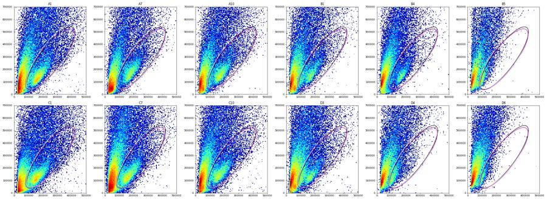
82
tool call · Bash
cd /task; cat > work/final_gate.py <<'EOF'
import flowkit as fk, numpy as np, pandas as pd, os
from flowkit import Dimension, GatingStrategy
from flowkit.gates import EllipsoidGate, PolygonGate, RectangleGate
lay = pd.read_csv('/task/inputs/plate_layout.csv')
OUT='/task/outputs'; os.makedirs(OUT,exist_ok=True)
U='uncompensated'
# ---- gate parameters (raw linear channel values, uncompensated) ----
cx,cy,a,b,deg = 255e3,290e3,290e3,80e3,58.0 # Cells ellipse: centre, semi-axes, tilt
th=np.deg2rad(deg); R=np.array([[np.cos(th),-np.sin(th)],[np.sin(th),np.cos(th)]])
cov=R@np.diag([a*a,b*b])@R.T
SING=[(15e3,4.5e3),(15e3,12.5e3),(500e3,740e3),(500e3,475e3)] # (SSC-H, SSC-A)
RL3_LO,RL3_HI=-20000.0,5000.0
BL1_LO,BL1_HI=1800.0,1048575.0
SSC_LO,SSC_HI=20000.0,600000.0
gs=GatingStrategy()
gs.add_gate(EllipsoidGate('Cells',[Dimension('FSC-A',U),Dimension('SSC-A',U)],[cx,cy],cov.tolist(),1.0),gate_path=('root',))
gs.add_gate(PolygonGate('Single_Cells',[Dimension('SSC-H',U),Dimension('SSC-A',U)],SING),gate_path=('root','Cells'))
gs.add_gate(RectangleGate('Live',[Dimension('RL3-A',U,range_min=RL3_LO,range_max=RL3_HI),Dimension('SSC-A',U,range_min=SSC_LO,range_max=SSC_HI)]),gate_path=('root','Cells','Single_Cells'))
gs.add_gate(RectangleGate('Caspase_pos',[Dimension('BL1-A',U,range_min=BL1_LO,range_max=BL1_HI),Dimension('SSC-A',U,range_min=SSC_LO,range_max=SSC_HI)]),gate_path=('root','Cells','Single_Cells','Live'))
with open(f'{OUT}/gates.xml','wb') as f: fk.export_gatingml(gs,f)
gs2=fk.parse_gating_xml(f'{OUT}/gates.xml')
print(gs2.get_gate_ids())
pops=[('Cells','all_events'),('Single_Cells','Cells'),('Live','Single_Cells'),('Caspase_pos','Live')]
rows=[]
for _,r in lay.iterrows():
s=fk.Sample('/task/inputs/raw/'+r.file)
res=gs2.gate_sample(s); rep=res.report.set_index('gate_name')
cnt={'all_events':s.event_count}
for p,par in pops: cnt[p]=int(rep.loc[p,'count'])
for p,par in pops:
rows.append(dict(file=r.file,well=r.well,population=p,count=cnt[p],parent_population=par,pct_of_parent=round(cnt[p]/cnt[par]*100,4) if cnt[par] else 0.0))
# independent numpy check
df=s.as_dataframe(source='raw'); df.columns=[c[0] for c in df.columns]
X=df[['FSC-A','SSC-A']].values-[cx,cy]; m=np.einsum('ij,jk,ik->i',X,np.linalg.inv(cov),X)<=1
from matplotlib.path import Path
sg=m&Path(SING).contains_points(df[['SSC-H','SSC-A']].values)
lv=sg&(df['RL3-A']>=RL3_LO)&(df['RL3-A']<RL3_HI)&(df['SSC-A']>=SSC_LO)&(df['SSC-A']<SSC_HI)
cp=lv&(df['BL1-A']>=BL1_LO)&(df['BL1-A']<BL1_HI)
chk=(m.sum(),sg.sum(),lv.sum(),cp.sum()); fkc=tuple(cnt[p] for p,_ in pops)
lost_lo=(sg&(df['RL3-A']<RL3_LO)).sum(); lost_ssc=(sg&((df['SSC-A']<SSC_LO)|(df['SSC-A']>=SSC_HI))).sum()
print(r.well,s.event_count,fkc,'numpy',chk,'OK' if max(abs(np.array(chk)-np.array(fkc)))<=3 else 'DIFF','RL3<lo in singlets',lost_lo,'ssc-excluded',lost_ssc)
c=pd.DataFrame(rows); c.to_csv(f'{OUT}/counts.csv',index=False)
print(c.pivot(index='well',columns='population',values='pct_of_parent').loc[lay.well,[p for p,_ in pops]].round(1).to_string())
EOF
python3 work/final_gate.py83
tool output (error)
Exit code 1
Traceback (most recent call last):
File "/task/work/final_gate.py", line 3, in <module>
from flowkit.gates import EllipsoidGate, PolygonGate, RectangleGate
ModuleNotFoundError: No module named 'flowkit.gates'85
tool call · Bash
cd /task; sed -i 's/^from flowkit.gates import EllipsoidGate, PolygonGate, RectangleGate/EllipsoidGate, PolygonGate, RectangleGate = fk.gates.EllipsoidGate, fk.gates.PolygonGate, fk.gates.RectangleGate/' work/final_gate.py; python3 work/final_gate.py
86
tool output
[('Cells', ('root',)), ('Single_Cells', ('root', 'Cells')), ('Live', ('root', 'Cells', 'Single_Cells')), ('Caspase_pos', ('root', 'Cells', 'Single_Cells', 'Live'))]
A1 90651 (13702, 10891, 10890, 78) numpy (13702, 10891, 10890, 78) OK RL3<lo in singlets 0 ssc-excluded 0
A2 81008 (10307, 8038, 8038, 52) numpy (10307, 8038, 8038, 52) OK RL3<lo in singlets 0 ssc-excluded 0
A3 95933 (16124, 13431, 13343, 1268) numpy (16124, 13431, 13343, 1268) OK RL3<lo in singlets 0 ssc-excluded 0
A5 73753 (10842, 9020, 8327, 807) numpy (10842, 9020, 8327, 807) OK RL3<lo in singlets 2 ssc-excluded 0
A7 64975 (9578, 8059, 7996, 965) numpy (9578, 8059, 7996, 965) OK RL3<lo in singlets 0 ssc-excluded 0
A8 60216 (9907, 8652, 8510, 1314) numpy (9907, 8652, 8510, 1314) OK RL3<lo in singlets 0 ssc-excluded 0
A9 80278 (15017, 13031, 12791, 2269) numpy (15017, 13031, 12791, 2269) OK RL3<lo in singlets 0 ssc-excluded 0
A10 64936 (10698, 8954, 8208, 855) numpy (10698, 8954, 8208, 855) OK RL3<lo in singlets 0 ssc-excluded 0
A11 68296 (10711, 9035, 8628, 985) numpy (10711, 9035, 8628, 985) OK RL3<lo in singlets 0 ssc-excluded 0
B1 58310 (7765, 6448, 5538, 594) numpy (7765, 6448, 5538, 594) OK RL3<lo in singlets 2 ssc-excluded 0
B2 51930 (6363, 5256, 4719, 379) numpy (6363, 5256, 4719, 379) OK RL3<lo in singlets 0 ssc-excluded 0
B3 13995 (1390, 1086, 595, 108) numpy (1390, 1086, 595, 108) OK RL3<lo in singlets 0 ssc-excluded 0
B4 58782 (6266, 5278, 4648, 470) numpy (6266, 5278, 4648, 470) OK RL3<lo in singlets 1 ssc-excluded 0
B5 33754 (2352, 1597, 83, 65) numpy (2352, 1597, 83, 65) OK RL3<lo in singlets 1 ssc-excluded 0
B6 8004 (708, 545, 88, 59) numpy (708, 545, 88, 59) OK RL3<lo in singlets 0 ssc-excluded 0
C1 95817 (16511, 12771, 12771, 8) numpy (16511, 12771, 12771, 8) OK RL3<lo in singlets 0 ssc-excluded 0
C2 80166 (13802, 10779, 10779, 11) numpy (13802, 10779, 10779, 11) OK RL3<lo in singlets 0 ssc-excluded 0
C3 68270 (10493, 8761, 8702, 672) numpy (10493, 8761, 8702, 672) OK RL3<lo in singlets 0 ssc-excluded 0
C5 88646 (15655, 13232, 12979, 1405) numpy (15655, 13232, 12979, 1405) OK RL3<lo in singlets 0 ssc-excluded 0
C7 119052 (13848, 11166, 11097, 1628) numpy (13848, 11166, 11097, 1628) OK RL3<lo in singlets 0 ssc-excluded 0
C8 52267 (7686, 6366, 6234, 1203) numpy (7686, 6366, 6234, 1203) OK RL3<lo in singlets 0 ssc-excluded 0
C9 92282 (14919, 12546, 12318, 2402) numpy (14919, 12546, 12318, 2402) OK RL3<lo in singlets 1 ssc-excluded 0
C10 88797 (11873, 9630, 9086, 1131) numpy (11873, 9630, 9086, 1131) OK RL3<lo in singlets 1 ssc-excluded 0
C11 63651 (8728, 7111, 6301, 1004) numpy (8728, 7111, 6301, 1004) OK RL3<lo in singlets 3 ssc-excluded 0
D1 97824 (10774, 8206, 6786, 787) numpy (10774, 8206, 6786, 787) OK RL3<lo in singlets 0 ssc-excluded 0
D2 73937 (10605, 8695, 7092, 847) numpy (10605, 8695, 7092, 847) OK RL3<lo in singlets 2 ssc-excluded 0
D3 77334 (9561, 7445, 5547, 722) numpy (9561, 7445, 5547, 722) OK RL3<lo in singlets 4 ssc-excluded 0
D4 46763 (4358, 3080, 723, 194) numpy (4358, 3080, 723, 194) OK RL3<lo in singlets 0 ssc-excluded 0
D5 18412 (1756, 1291, 61, 57) numpy (1756, 1291, 61, 57) OK RL3<lo in singlets 1 ssc-excluded 0
D6 46753 (2047, 1574, 257, 216) numpy (2047, 1574, 257, 216) OK RL3<lo in singlets 3 ssc-excluded 0
population Cells Single_Cells Live Caspase_pos
well
A1 15.1 79.5 100.0 0.7
A2 12.7 78.0 100.0 0.6
A3 16.8 83.3 99.3 9.5
A5 14.7 83.2 92.3 9.7
A7 14.7 84.1 99.2 12.1
A8 16.5 87.3 98.4 15.4
A9 18.7 86.8 98.2 17.7
A10 16.5 83.7 91.7 10.4
A11 15.7 84.4 95.5 11.4
B1 13.3 83.0 85.9 10.7
B2 12.3 82.6 89.8 8.0
B3 9.9 78.1 54.8 18.2
B4 10.7 84.2 88.1 10.1
B5 7.0 67.9 5.2 78.3
B6 8.8 77.0 16.1 67.0
C1 17.2 77.3 100.0 0.1
C2 17.2 78.1 100.0 0.1
C3 15.4 83.5 99.3 7.7
C5 17.7 84.5 98.1 10.8
C7 11.6 80.6 99.4 14.7
C8 14.7 82.8 97.9 19.3
C9 16.2 84.1 98.2 19.5
C10 13.4 81.1 94.4 12.4
C11 13.7 81.5 88.6 15.9
D1 11.0 76.2 82.7 11.6
D2 14.3 82.0 81.6 11.9
D3 12.4 77.9 74.5 13.0
D4 9.3 70.7 23.5 26.8
D5 9.5 73.5 4.7 93.4
D6 4.4 76.9 16.3 84.088
tool call · Bash
cd /task; cat > work/qc4.py <<'EOF'
import sys; sys.path.insert(0,'/task/work')
from load import *
from matplotlib.path import Path
cx,cy,a,b,deg = 255e3,290e3,290e3,80e3,58.0
th=np.deg2rad(deg); R=np.array([[np.cos(th),-np.sin(th)],[np.sin(th),np.cos(th)]]); cov=R@np.diag([a*a,b*b])@R.T; Ci=np.linalg.inv(cov)
SING=[(15e3,4.5e3),(15e3,12.5e3),(500e3,740e3),(500e3,475e3)]
pd.set_option('display.width',350); pd.set_option('display.max_columns',100)
rows=[]; detail={}
for w,df in D.items():
X=df[['FSC-A','SSC-A']].values-[cx,cy]; m=np.einsum('ij,jk,ik->i',X,Ci,X)<=1
sg=m&Path(SING).contains_points(df[['SSC-H','SSC-A']].values)
lv=sg&(df['RL3-A']>=-20000)&(df['RL3-A']<5000); cp=lv&(df['BL1-A']>=1800)
t=df['Time'].values; tmax=t.max()
# 0.5 s bins over full run excluding last partial
e=np.arange(0,np.floor(tmax*2)/2+1e-9,0.5); h,_=np.histogram(t,bins=e); med=np.median(h)
# rolling median (5 s window) for local expectation
hs=pd.Series(h); loc=hs.rolling(11,center=True,min_periods=3).median()
dev=(h/loc)
low=(dev<0.5); high=(dev>1.5)
g=np.diff(np.sort(t));
gaps=g[g>0.15];
# last 2 s rate vs median
tail=((t>tmax-1.5).sum()/1.5)/(med*2)
# stability across 6 equal time segments
seg=np.minimum((t/tmax*6).astype(int),5)
pc=[m[seg==i].mean()*100 for i in range(6)]
pl=[lv[seg==i].sum()/max(sg[seg==i].sum(),1)*100 for i in range(6)]
pcp=[cp[seg==i].sum()/max(lv[seg==i].sum(),1)*100 for i in range(6)]
fs=[np.median(df['FSC-A'].values[seg==i]) for i in range(6)]
rows.append(dict(well=w,n=len(df),dur=round(tmax,1),rate_med=med*2,cv_rate=round(h.std()/h.mean(),2),n_low=int(low.sum()),n_high=int(high.sum()),pct_bins_dist=round((low|high).mean()*100,1),
n_gap=len(gaps),gap_sum=round(gaps.sum(),2),gap_max=round(g.max(),2),min_rate=h.min()*2,max_rate=h.max()*2,tail=round(tail,2),
cells_rng=f'{min(pc):.1f}-{max(pc):.1f}',live_rng=f'{min(pl):.0f}-{max(pl):.0f}',casp_rng=f'{min(pcp):.0f}-{max(pcp):.0f}',fsc_rng=f'{min(fs)/1e3:.0f}-{max(fs)/1e3:.0f}',
satRL3_sing=round((df['RL3-A'][sg]>=1048575).mean()*100,2),satSSC=round((df['SSC-A']>=1048575).mean()*100,1),satFSC=round((df['FSC-A']>=1048575).mean()*100,1)))
detail[w]=(pc,pl,pcp)
q=pd.DataFrame(rows); print(q.to_string()); q.to_csv('work/qc_metrics.csv',index=False)
EOF
python3 work/qc4.py89
tool output
well n dur rate_med cv_rate n_low n_high pct_bins_dist n_gap gap_sum gap_max min_rate max_rate tail cells_rng live_rng casp_rng fsc_rng satRL3_sing satSSC satFSC 0 A1 90651 47.5 1925.0 0.15 0 0 0.0 0 0.00 0.09 1242 2668 0.81 13.3-16.4 100-100 0-1 143-182 0.0 30.4 4.2 1 A2 81008 46.3 1728.0 0.16 0 0 0.0 0 0.00 0.08 1160 2832 0.73 11.1-14.2 100-100 0-1 123-155 0.0 26.9 2.9 2 A3 95933 47.1 2044.0 0.14 0 0 0.0 0 0.00 0.02 1368 2808 0.70 14.6-19.3 99-100 9-11 137-169 0.0 26.7 1.8 3 A5 73753 46.3 1616.0 0.13 0 0 0.0 0 0.00 0.07 1104 2128 0.75 12.8-16.5 92-93 9-11 131-166 0.0 28.9 2.1 4 A7 64975 46.2 1415.0 0.14 0 0 0.0 0 0.00 0.02 984 1842 0.75 13.5-16.2 99-100 11-13 117-150 0.0 26.4 1.1 5 A8 60216 47.3 1277.0 0.18 0 0 0.0 0 0.00 0.03 560 1942 0.49 14.4-18.6 98-98 15-16 146-173 0.0 29.4 1.7 6 A9 80278 46.4 1726.0 0.14 0 0 0.0 0 0.00 0.05 1056 2192 0.67 16.8-20.5 98-99 17-19 121-166 0.0 24.8 1.8 7 A10 64936 47.2 1418.0 0.16 0 0 0.0 0 0.00 0.11 774 1876 0.61 14.4-18.7 90-92 9-11 116-159 0.0 25.2 1.9 8 A11 68296 46.4 1499.0 0.15 0 0 0.0 1 0.18 0.18 948 2470 0.70 13.6-17.5 95-96 10-13 125-157 0.0 27.2 2.9 9 B1 58310 46.3 1260.0 0.27 2 2 4.3 1 0.48 0.48 170 2982 0.84 12.3-15.0 85-87 9-13 118-144 0.0 27.4 2.2 10 B2 51930 47.2 1095.0 0.14 0 0 0.0 0 0.00 0.13 750 1522 0.83 11.4-14.1 88-91 7-9 104-132 0.0 23.9 3.2 11 B3 13995 47.2 308.0 0.15 0 0 0.0 0 0.00 0.07 178 384 0.73 9.5-10.3 50-60 15-25 79-95 0.0 13.2 0.6 12 B4 58782 46.2 1287.0 0.18 1 2 3.3 1 0.25 0.25 548 2412 0.88 10.1-11.3 86-90 8-12 90-109 0.0 20.1 2.3 13 B5 33754 46.3 741.0 0.19 2 0 2.2 1 0.32 0.32 238 1236 0.75 5.6-8.5 3-8 62-100 105-116 0.0 26.5 0.8 14 B6 8004 47.4 170.0 0.16 0 0 0.0 0 0.00 0.10 92 222 0.49 7.9-10.8 12-21 58-89 92-101 0.0 15.4 0.2 15 C1 95817 46.3 2040.0 0.22 1 1 2.2 2 0.42 0.24 94 4708 0.82 14.8-20.2 100-100 0-0 154-203 0.0 35.9 5.8 16 C2 80166 47.4 1661.0 0.19 2 1 3.2 1 0.26 0.26 632 3506 0.46 14.5-19.8 100-100 0-0 158-187 0.0 34.0 4.7 17 C3 68270 46.2 1467.0 0.15 0 0 0.0 0 0.00 0.11 1036 2036 0.81 13.0-17.8 99-100 7-8 166-197 0.0 36.9 4.3 18 C5 88646 47.4 1906.0 0.17 1 0 1.1 0 0.00 0.05 430 2460 0.31 14.9-21.7 98-98 10-12 185-225 0.0 39.8 5.4 19 C7 119052 47.4 2624.0 0.20 2 1 3.2 0 0.00 0.10 878 4820 0.39 10.2-12.8 99-100 13-16 118-144 0.0 31.9 2.9 20 C8 52267 46.2 1148.0 0.16 0 0 0.0 0 0.00 0.08 694 1608 0.68 12.7-17.5 97-98 18-21 143-178 0.0 35.5 3.7 21 C9 92282 47.4 2004.0 0.28 3 1 4.3 0 0.00 0.14 90 4576 0.24 13.3-18.7 98-99 18-22 152-189 0.0 36.3 4.5 22 C10 88797 47.2 1938.0 0.30 6 3 9.6 3 0.70 0.33 106 3978 0.46 11.8-15.5 93-95 11-14 123-157 0.0 30.4 4.4 23 C11 63651 46.4 1384.0 0.33 6 4 10.9 2 0.62 0.36 38 3028 0.64 12.9-14.8 87-90 14-17 129-144 0.0 29.7 4.0 24 D1 97824 47.4 2115.0 0.25 3 2 5.3 1 0.26 0.26 106 4318 0.37 10.4-12.5 80-86 11-13 102-122 0.0 24.7 4.1 25 D2 73937 47.3 1593.0 0.21 2 0 2.1 0 0.00 0.12 270 2598 0.24 12.1-16.1 80-85 11-14 116-160 0.0 26.6 3.4 26 D3 77334 46.4 1595.0 0.42 7 7 15.2 7 1.47 0.29 106 4330 0.85 11.0-13.9 73-77 12-14 115-144 0.0 28.5 3.4 27 D4 46763 47.2 982.0 0.34 4 5 9.6 1 0.30 0.30 26 2110 0.23 8.2-10.4 20-29 20-35 107-123 0.0 26.6 1.6 28 D5 18412 46.4 390.0 0.28 2 3 5.4 3 0.74 0.31 18 950 0.93 9.0-10.4 4-7 88-100 102-118 0.0 25.4 1.4 29 D6 46753 46.2 1052.0 0.30 5 4 9.8 3 0.89 0.36 20 2270 1.01 4.1-5.3 15-19 76-96 89-94 0.0 22.5 1.3
91
agent
Flow hiccups look brief and gated fractions are stable over time; checking time-resolved scatter/fluorescence drift per well before finalizing flags.
92
tool call · Bash
cd /task; cat > work/qc5.py <<'EOF'
import sys; sys.path.insert(0,'/task/work')
from load import *
import matplotlib; matplotlib.use('Agg'); import matplotlib.pyplot as plt
fig,axs=plt.subplots(5,6,figsize=(30,20))
for ax,(w,df) in zip(axs.ravel(),D.items()):
t=df['Time'].values; b=np.floor(t).astype(int)
g=df.groupby(b)
ax.plot(g['FSC-A'].median()/1e5,label='FSC med/1e5')
ax.plot(g['SSC-A'].median()/3e5,label='SSC med/3e5')
ax.plot(g.apply(lambda d:(d['SSC-A']>=1048575).mean())*3,label='SSC sat frac x3')
ax.plot(g.apply(lambda d:(d['RL3-A']>=5000).mean())*2,label='frac RL3>5e3 x2')
ax.plot(g.apply(lambda d:(d['BL1-A']>=1800).mean())*2,label='frac BL1>1800 x2')
ax.plot(g.size()/g.size().median(),'k:',label='rate/med')
ax.set_ylim(0,3); ax.set_title(w)
axs[0,0].legend(fontsize=7)
plt.tight_layout(); plt.savefig('work/timeqc.png',dpi=50)
EOF
python3 work/qc5.py 2>&1 | grep -v Warning | head93
tool call · Read
{
"file_path": "/task/work/timeqc.png"
}94
tool output
(Bash completed with no output)
95
tool output
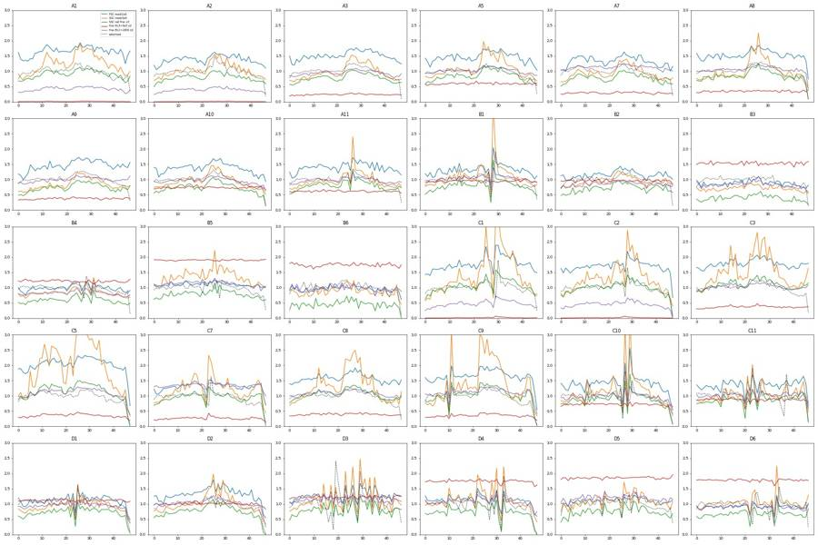
97
tool call · Bash
cd /task; cat > work/qc6.py <<'EOF'
import sys; sys.path.insert(0,'/task/work')
from load import *
from matplotlib.path import Path
cx,cy,a,b,deg = 255e3,290e3,290e3,80e3,58.0
th=np.deg2rad(deg); R=np.array([[np.cos(th),-np.sin(th)],[np.sin(th),np.cos(th)]]); cov=R@np.diag([a*a,b*b])@R.T; Ci=np.linalg.inv(cov)
SING=[(15e3,4.5e3),(15e3,12.5e3),(500e3,740e3),(500e3,475e3)]
for w,df in D.items():
X=df[['FSC-A','SSC-A']].values-[cx,cy]; m=np.einsum('ij,jk,ik->i',X,Ci,X)<=1
sg=m&Path(SING).contains_points(df[['SSC-H','SSC-A']].values)
lv=sg&(df['RL3-A']>=-20000)&(df['RL3-A']<5000); cp=lv&(df['BL1-A']>=1800)
t=df['Time'].values; tmax=t.max()
e=np.arange(0,np.ceil(tmax*2)/2+1e-9,0.5); h,_=np.histogram(t,bins=e)
loc=pd.Series(h).rolling(11,center=True,min_periods=3).median().values
dev=h/loc; bad=(dev<0.6)|(dev>1.4); bad[-4:]=False
bi=np.minimum((t/0.5).astype(int),len(h)-1); eb=bad[bi]
tail=t>tmax-2
def f(sel):
return f'n={sel.sum():6d} cells={m[sel].mean()*100:5.1f} sing={sg[sel].sum()/max(m[sel].sum(),1)*100:5.1f} live={lv[sel].sum()/max(sg[sel].sum(),1)*100:5.1f} casp={cp[sel].sum()/max(lv[sel].sum(),1)*100:5.1f}'
badspans=[f'{e[i]:.1f}' for i in np.where(bad)[0]]
print(w,f'badbins={bad.sum()}/{len(h)} ev_in_bad={eb.mean()*100:4.1f}% | clean:',f(~eb&~tail),'| disturbed:',f(eb),'| last2s:',f(tail), 'FSCmed tail',int(np.median(df['FSC-A'][tail])),'vs',int(np.median(df['FSC-A'][~tail])))
if w in('D3','C10','C11','D4','D6','B1','D5'): print(' bad bin starts:',' '.join(badspans))
EOF
python3 work/qc6.py98
tool output
/task/work/qc6.py:18: RuntimeWarning: Mean of empty slice.
return f'n={sel.sum():6d} cells={m[sel].mean()*100:5.1f} sing={sg[sel].sum()/max(m[sel].sum(),1)*100:5.1f} live={lv[sel].sum()/max(sg[sel].sum(),1)*100:5.1f} casp={cp[sel].sum()/max(lv[sel].sum(),1)*100:5.1f}'
/usr/local/lib/python3.12/site-packages/numpy/core/_methods.py:129: RuntimeWarning: invalid value encountered in scalar divide
ret = ret.dtype.type(ret / rcount)
/task/work/qc6.py:18: RuntimeWarning: Mean of empty slice.
return f'n={sel.sum():6d} cells={m[sel].mean()*100:5.1f} sing={sg[sel].sum()/max(m[sel].sum(),1)*100:5.1f} live={lv[sel].sum()/max(sg[sel].sum(),1)*100:5.1f} casp={cp[sel].sum()/max(lv[sel].sum(),1)*100:5.1f}'
/usr/local/lib/python3.12/site-packages/numpy/core/_methods.py:129: RuntimeWarning: invalid value encountered in scalar divide
ret = ret.dtype.type(ret / rcount)
/task/work/qc6.py:18: RuntimeWarning: Mean of empty slice.
return f'n={sel.sum():6d} cells={m[sel].mean()*100:5.1f} sing={sg[sel].sum()/max(m[sel].sum(),1)*100:5.1f} live={lv[sel].sum()/max(sg[sel].sum(),1)*100:5.1f} casp={cp[sel].sum()/max(lv[sel].sum(),1)*100:5.1f}'
/usr/local/lib/python3.12/site-packages/numpy/core/_methods.py:129: RuntimeWarning: invalid value encountered in scalar divide
ret = ret.dtype.type(ret / rcount)
/task/work/qc6.py:18: RuntimeWarning: Mean of empty slice.
return f'n={sel.sum():6d} cells={m[sel].mean()*100:5.1f} sing={sg[sel].sum()/max(m[sel].sum(),1)*100:5.1f} live={lv[sel].sum()/max(sg[sel].sum(),1)*100:5.1f} casp={cp[sel].sum()/max(lv[sel].sum(),1)*100:5.1f}'
/usr/local/lib/python3.12/site-packages/numpy/core/_methods.py:129: RuntimeWarning: invalid value encountered in scalar divide
ret = ret.dtype.type(ret / rcount)
/task/work/qc6.py:18: RuntimeWarning: Mean of empty slice.
return f'n={sel.sum():6d} cells={m[sel].mean()*100:5.1f} sing={sg[sel].sum()/max(m[sel].sum(),1)*100:5.1f} live={lv[sel].sum()/max(sg[sel].sum(),1)*100:5.1f} casp={cp[sel].sum()/max(lv[sel].sum(),1)*100:5.1f}'
/usr/local/lib/python3.12/site-packages/numpy/core/_methods.py:129: RuntimeWarning: invalid value encountered in scalar divide
ret = ret.dtype.type(ret / rcount)
/task/work/qc6.py:18: RuntimeWarning: Mean of empty slice.
return f'n={sel.sum():6d} cells={m[sel].mean()*100:5.1f} sing={sg[sel].sum()/max(m[sel].sum(),1)*100:5.1f} live={lv[sel].sum()/max(sg[sel].sum(),1)*100:5.1f} casp={cp[sel].sum()/max(lv[sel].sum(),1)*100:5.1f}'
/usr/local/lib/python3.12/site-packages/numpy/core/_methods.py:129: RuntimeWarning: invalid value encountered in scalar divide
ret = ret.dtype.type(ret / rcount)
/task/work/qc6.py:18: RuntimeWarning: Mean of empty slice.
return f'n={sel.sum():6d} cells={m[sel].mean()*100:5.1f} sing={sg[sel].sum()/max(m[sel].sum(),1)*100:5.1f} live={lv[sel].sum()/max(sg[sel].sum(),1)*100:5.1f} casp={cp[sel].sum()/max(lv[sel].sum(),1)*100:5.1f}'
/usr/local/lib/python3.12/site-packages/numpy/core/_methods.py:129: RuntimeWarning: invalid value encountered in scalar divide
ret = ret.dtype.type(ret / rcount)
/task/work/qc6.py:18: RuntimeWarning: Mean of empty slice.
return f'n={sel.sum():6d} cells={m[sel].mean()*100:5.1f} sing={sg[sel].sum()/max(m[sel].sum(),1)*100:5.1f} live={lv[sel].sum()/max(sg[sel].sum(),1)*100:5.1f} casp={cp[sel].sum()/max(lv[sel].sum(),1)*100:5.1f}'
/usr/local/lib/python3.12/site-packages/numpy/core/_methods.py:129: RuntimeWarning: invalid value encountered in scalar divide
ret = ret.dtype.type(ret / rcount)
/task/work/qc6.py:18: RuntimeWarning: Mean of empty slice.
return f'n={sel.sum():6d} cells={m[sel].mean()*100:5.1f} sing={sg[sel].sum()/max(m[sel].sum(),1)*100:5.1f} live={lv[sel].sum()/max(sg[sel].sum(),1)*100:5.1f} casp={cp[sel].sum()/max(lv[sel].sum(),1)*100:5.1f}'
/usr/local/lib/python3.12/site-packages/numpy/core/_methods.py:129: RuntimeWarning: invalid value encountered in scalar divide
ret = ret.dtype.type(ret / rcount)
/task/work/qc6.py:18: RuntimeWarning: Mean of empty slice.
return f'n={sel.sum():6d} cells={m[sel].mean()*100:5.1f} sing={sg[sel].sum()/max(m[sel].sum(),1)*100:5.1f} live={lv[sel].sum()/max(sg[sel].sum(),1)*100:5.1f} casp={cp[sel].sum()/max(lv[sel].sum(),1)*100:5.1f}'
/usr/local/lib/python3.12/site-packages/numpy/core/_methods.py:129: RuntimeWarning: invalid value encountered in scalar divide
ret = ret.dtype.type(ret / rcount)
/task/work/qc6.py:18: RuntimeWarning: Mean of empty slice.
return f'n={sel.sum():6d} cells={m[sel].mean()*100:5.1f} sing={sg[sel].sum()/max(m[sel].sum(),1)*100:5.1f} live={lv[sel].sum()/max(sg[sel].sum(),1)*100:5.1f} casp={cp[sel].sum()/max(lv[sel].sum(),1)*100:5.1f}'
/usr/local/lib/python3.12/site-packages/numpy/core/_methods.py:129: RuntimeWarning: invalid value encountered in scalar divide
ret = ret.dtype.type(ret / rcount)
/task/work/qc6.py:18: RuntimeWarning: Mean of empty slice.
return f'n={sel.sum():6d} cells={m[sel].mean()*100:5.1f} sing={sg[sel].sum()/max(m[sel].sum(),1)*100:5.1f} live={lv[sel].sum()/max(sg[sel].sum(),1)*100:5.1f} casp={cp[sel].sum()/max(lv[sel].sum(),1)*100:5.1f}'
/usr/local/lib/python3.12/site-packages/numpy/core/_methods.py:129: RuntimeWarning: invalid value encountered in scalar divide
ret = ret.dtype.type(ret / rcount)
/task/work/qc6.py:18: RuntimeWarning: Mean of empty slice.
return f'n={sel.sum():6d} cells={m[sel].mean()*100:5.1f} sing={sg[sel].sum()/max(m[sel].sum(),1)*100:5.1f} live={lv[sel].sum()/max(sg[sel].sum(),1)*100:5.1f} casp={cp[sel].sum()/max(lv[sel].sum(),1)*100:5.1f}'
/usr/local/lib/python3.12/site-packages/numpy/core/_methods.py:129: RuntimeWarning: invalid value encountered in scalar divide
ret = ret.dtype.type(ret / rcount)
/task/work/qc6.py:18: RuntimeWarning: Mean of empty slice.
return f'n={sel.sum():6d} cells={m[sel].mean()*100:5.1f} sing={sg[sel].sum()/max(m[sel].sum(),1)*100:5.1f} live={lv[sel].sum()/max(sg[sel].sum(),1)*100:5.1f} casp={cp[sel].sum()/max(lv[sel].sum(),1)*100:5.1f}'
/usr/local/lib/python3.12/site-packages/numpy/core/_methods.py:129: Runtim
… [8,279 more characters not shown]100
tool call · Bash
cd /task; cat > work/flags.py <<'EOF'
import sys; sys.path.insert(0,'/task/work')
from load import *
c=pd.read_csv('/task/outputs/counts.csv'); q=pd.read_csv('/task/work/qc_metrics.csv').set_index('well')
P=c.pivot(index='well',columns='population',values='count'); PP=c.pivot(index='well',columns='population',values='pct_of_parent')
med_n=int(np.median([len(d) for d in D.values()]))
def base(w):
r=q.loc[w]; return (f"{int(r.n)} events over {r.dur} s (median {int(r.rate_med)} ev/s, min-max {int(r.min_rate)}-{int(r.max_rate)} ev/s in 0.5 s bins, longest gap {r.gap_max} s); "
f"Cells {P.loc[w,'Cells']}, Single_Cells {P.loc[w,'Single_Cells']}, Live {P.loc[w,'Live']}, Caspase_pos {P.loc[w,'Caspase_pos']}")
def allpct(w,ch,thr): return (D[w][ch]>thr).mean()*100
def lobe_med(w):
df=D[w]; m=(df['FSC-A']>110000)&(df['FSC-A']<350000)&(df['SSC-A']<1.1*df['FSC-A'])&(df['SSC-A']>20000); return df['RL3-A'][m].median()
F={}
for w,ref,un in [('A2','A7','A1'),('C2','C7','C1')]:
F[w]=('no','bad_control',f"Zombie NIR-only control shows no Zombie NIR signal: RL3-A>10000 in {allpct(w,'RL3-A',1e4):.2f}% of all {len(D[w])} events vs {allpct(un,'RL3-A',1e4):.2f}% in unstained {un} and {allpct(ref,'RL3-A',1e4):.2f}% in NT double-stained {ref}; RL3-A median of intact-cell cloud {lobe_med(w):.0f} vs {lobe_med(un):.0f} ({un}) and {lobe_med(ref):.0f} ({ref}); 99th pct RL3-A {np.percentile(D[w]['RL3-A'],99):.0f} vs {np.percentile(D[un]['RL3-A'],99):.0f} ({un}); Live {PP.loc[w,'Live']:.2f}% of Single_Cells. Well behaves as a second unstained well, so it is not a valid viability-dye single-stain reference; flow itself was steady ({base(w)}). confidence=high")
for w,ref,un in [('A3','A7','A1'),('C3','C7','C1')]:
F[w]=('no','bad_control',f"Caspase-only control carries a Zombie NIR-bright population it should not have: RL3-A>10000 in {allpct(w,'RL3-A',1e4):.2f}% of all {len(D[w])} events (99th pct RL3-A {np.percentile(D[w]['RL3-A'],99):.0f}) vs {allpct(un,'RL3-A',1e4):.2f}% (99th pct {np.percentile(D[un]['RL3-A'],99):.0f}) in unstained {un} and {allpct(ref,'RL3-A',1e4):.2f}% in NT double-stained {ref}; RL3-A median of intact-cell cloud {lobe_med(w):.0f} vs {lobe_med(un):.0f} ({un}) and {lobe_med(ref):.0f} ({ref}). Well is indistinguishable from a double-stained NT well (stain or label wrong), so it cannot serve as the Zombie-negative reference; flow itself was steady ({base(w)}). confidence=high")
F['B6']=('no','too_few_events',f"Only {len(D['B6'])} events in a full-length {q.loc['B6','dur']} s acquisition ({len(D['B6'])/med_n*100:.0f}% of plate median {med_n}); event rate flat at median {int(q.loc['B6','rate_med'])} ev/s (min-max {int(q.loc['B6','min_rate'])}-{int(q.loc['B6','max_rate'])} ev/s per 0.5 s bin, no gap >{q.loc['B6','gap_max']} s) so this is a sparse sample, not a clog; gated counts Cells {P.loc['B6','Cells']}, Single_Cells {P.loc['B6','Single_Cells']}, Live {P.loc['B6','Live']}, Caspase_pos {P.loc['B6','Caspase_pos']} - Caspase_pos % rests on {P.loc['B6','Live']} Live events. Treatment also unrecorded. confidence=high")
F['B3']=('no','too_few_events',f"Only {len(D['B3'])} events in a full-length {q.loc['B3','dur']} s acquisition ({len(D['B3'])/med_n*100:.0f}% of plate median {med_n}; replicate B4 has {len(D['B4'])}); rate flat at median {int(q.loc['B3','rate_med'])} ev/s vs {int(q.loc['B4','rate_med'])} ev/s in B4 (min-max {int(q.loc['B3','min_rate'])}-{int(q.loc['B3','max_rate'])} ev/s per 0.5 s bin, longest gap {q.loc['B3','gap_max']} s), i.e. cell loss rather than a flow fault; Cells {P.loc['B3','Cells']}, Single_Cells {P.loc['B3','Single_Cells']}, Live {P.loc['B3','Live']}, Caspase_pos {P.loc['B3','Caspase_pos']}; result disagrees with its replicate (Live {PP.loc['B3','Live']:.1f}% vs {PP.loc['B4','Live']:.1f}% in B4; Caspase_pos {PP.loc['B3','Caspase_pos']:.1f}% vs {PP.loc['B4','Caspase_pos']:.1f}%). confidence=medium")
F['D5']=('no','too_few_events',f"Only {len(D['D5'])} events in a full-length {q.loc['D5','dur']} s acquisition ({len(D['D5'])/med_n*100:.0f}% of plate median {med_n}); median rate {int(q.loc['D5','rate_med'])} ev/s (min-max {int(q.loc['D5','min_rate'])}-{int(q.loc['D5','max_rate'])} ev/s per 0.5 s bin, {int(q.loc['D5','n_gap'])} gaps >0.15 s, longest {q.loc['D5','gap_max']} s); Cells {P.loc['D5','Cells']}, Single_Cells {P.loc['D5','Single_Cells']}, Live {P.loc['D5','Live']}, Caspase_pos {P.loc['D5','Caspase_pos']} - Caspase_pos % rests on {P.loc['D5','Live']} Live events. Treatment also unrecorded. confidence=medium")
F['D4']=('no','mislabeled_or_unexpected',f"Labelled camptothecin 20 uM replicate 2 but does not match its replicate or the dose trend: Live {PP.loc['D4','Live']:.1f}% of Single_Cells ({P.loc['D4','Live']}/{P.loc['D4','Single_Cells']}) vs {PP.loc['D3','Live']:.1f}% in replicate D3 and {PP.loc['D1','Live']:.1f}/{PP.loc['D2','Live']:.1f}% at 10 uM; RL3-A>10000 in {allpct('D4','RL3-A',1e4):.1f}% of all {len(D['D4'])} events (median RL3-A {D['D4']['RL3-A'].median():.0f}) vs {allpct('D3','RL3-A',1e4):.1f}% (median {D['D3']['RL3-A'].median():.0f}) in D3, and instead matches the unrecorded wells D5/D6 ({allpct('D5','RL3-A',1e4):.1f}%/{allpct('D6','RL3-A',1e4):.1f}%). Low Live fraction is constant across six equal time segments ({q.loc['D4','live_rng']}%), so it is a property of the sample, not a flow artefact (median {int(q.loc['D4','rate_med'])} ev/s, longest gap {q.loc['D4','gap_max']} s). Likely plate-map error or well-specific over-kill. confidence=medium")
notes={
'D3':f"usable with caution: flow was unsteady from ~14 s to ~43 s ({int(q.loc['D3','n_gap'])} gaps >0.15 s totalling {q.loc['D3','gap_sum']} s, rate {int(q.loc['D3','min_rate'])}-{int(q.loc['D3','max_rate'])} ev/s per 0.5 s bin, 22% of events in disturbed bins) but gated fractions agree in disturbed vs steady bins (Live 75.6 vs 74.2%, Caspase_pos 11.8 vs 13.3%)",
'A5':f"usable; note WT vehicle has more Zombie-bright events than NT (RL3-A>10000 in {allpct('A5','RL3-A',1e4):.1f}% of all events
… [1,145 more characters not shown]101
tool output
A1 yes ok | steady acquisition; 90651 events, median 1925 ev/s, longest gap 0.09 s A2 no bad_control | Zombie NIR-only control shows no Zombie NIR signal: RL3-A>10000 in 0.11% of all 81008 events vs 0.15% in unstained A1 and 9.93% in NT double-stained A7; RL3-A median of intact-cell cloud 5 vs 4 (A1) and 64 (A7); 99th pct RL3-A 2997 vs 3302 (A1); Live 100.00% of Single_Cells. Well behaves as a second unstained well, so it is not a valid viability-dye single-stain reference; flow itself was steady (81008 events over 46.3 s (median 1728 ev/s, min-max 1160-2832 ev/s in 0.5 s bins, longest gap 0.08 s); Cells 10307, Single_Cells 8038, Live 8038, Caspase_pos 52). confidence=high A3 no bad_control | Caspase-only control carries a Zombie NIR-bright population it should not have: RL3-A>10000 in 7.68% of all 95933 events (99th pct RL3-A 70556) vs 0.15% (99th pct 3302) in unstained A1 and 9.93% in NT double-stained A7; RL3-A median of intact-cell cloud 53 vs 4 (A1) and 64 (A7). Well is indistinguishable from a double-stained NT well (stain or label wrong), so it cannot serve as the Zombie-negative reference; flow itself was steady (95933 events over 47.1 s (median 2044 ev/s, min-max 1368-2808 ev/s in 0.5 s bins, longest gap 0.02 s); Cells 16124, Single_Cells 13431, Live 13343, Caspase_pos 1268). confidence=high A5 yes ok | usable; note WT vehicle has more Zombie-bright events than NT (RL3-A>10000 in 22.6% of all events vs 9.9% in A7; Live 92.3% vs 99.2%); 73753 events, median 1616 ev/s, longest gap 0.07 s A7 yes ok | steady acquisition; 64975 events, median 1415 ev/s, longest gap 0.02 s A8 yes ok | steady acquisition; 60216 events, median 1277 ev/s, longest gap 0.03 s A9 yes ok | steady acquisition; 80278 events, median 1726 ev/s, longest gap 0.05 s A10 yes ok | steady acquisition; 64936 events, median 1418 ev/s, longest gap 0.11 s A11 yes ok | steady acquisition; 68296 events, median 1499 ev/s, longest gap 0.18 s B1 yes ok | steady acquisition; 58310 events, median 1260 ev/s, longest gap 0.48 s B2 yes ok | steady acquisition; 51930 events, median 1095 ev/s, longest gap 0.13 s B3 no too_few_events | Only 13995 events in a full-length 47.2 s acquisition (20% of plate median 68283; replicate B4 has 58782); rate flat at median 308 ev/s vs 1287 ev/s in B4 (min-max 178-384 ev/s per 0.5 s bin, longest gap 0.07 s), i.e. cell loss rather than a flow fault; Cells 1390, Single_Cells 1086, Live 595, Caspase_pos 108; result disagrees with its replicate (Live 54.8% vs 88.1% in B4; Caspase_pos 18.2% vs 10.1%). confidence=medium B4 yes ok | steady acquisition; 58782 events, median 1287 ev/s, longest gap 0.25 s B5 yes ok | usable for Live %; treatment unrecorded; Caspase_pos % rests on only 83 Live events; 33754 events, median 741 ev/s, longest gap 0.32 s B6 no too_few_events | Only 8004 events in a full-length 47.4 s acquisition (12% of plate median 68283); event rate flat at median 170 ev/s (min-max 92-222 ev/s per 0.5 s bin, no gap >0.1 s) so this is a sparse sample, not a clog; gated counts Cells 708, Single_Cells 545, Live 88, Caspase_pos 59 - Caspase_pos % rests on 88 Live events. Treatment also unrecorded. confidence=high C1 yes ok | steady acquisition; 95817 events, median 2040 ev/s, longest gap 0.24 s C2 no bad_control | Zombie NIR-only control shows no Zombie NIR signal: RL3-A>10000 in 0.24% of all 80166 events vs 0.20% in unstained C1 and 8.05% in NT double-stained C7; RL3-A median of intact-cell cloud 1 vs 2 (C1) and 59 (C7); 99th pct RL3-A 4128 vs 4099 (C1); Live 100.00% of Single_Cells. Well behaves as a second unstained well, so it is not a valid viability-dye single-stain reference; flow itself was steady (80166 events over 47.4 s (median 1661 ev/s, min-max 632-3506 ev/s in 0.5 s bins, longest gap 0.26 s); Cells 13802, Single_Cells 10779, Live 10779, Caspase_pos 11). confidence=high C3 no bad_control | Caspase-only control carries a Zombie NIR-bright population it should not have: RL3-A>10000 in 11.64% of all 68270 events (99th pct RL3-A 108542) vs 0.20% (99th pct 4099) in unstained C1 and 8.05% in NT double-stained C7; RL3-A median of intact-cell cloud 77 vs 2 (C1) and 59 (C7). Well is indistinguishable from a double-stained NT well (stain or label wrong), so it cannot serve as the Zombie-negative reference; flow itself was steady (68270 events over 46.2 s (median 1467 ev/s, min-max 1036-2036 ev/s in 0.5 s bins, longest gap 0.11 s); Cells 10493, Single_Cells 8761, Live 8702, Caspase_pos 672). confidence=high C5 yes ok | steady acquisition; 88646 events, median 1906 ev/s, longest gap 0.05 s C7 yes ok | steady acquisition; 119052 events, median 2624 ev/s, longest gap 0.1 s C8 yes ok | steady acquisition; 52267 events, median 1148 ev/s, longest gap 0.08 s C9 yes ok | steady acquisition; 92282 events, median 2004 ev/s, longest gap 0.14 s C10 yes ok | usable; brief rate dips (3 gaps >0.15 s, 0.70 s total) with gated fractions unchanged; 88797 events, median 1938 ev/s, longest gap 0.33 s C11 yes ok | usable; brief rate dips (2 gaps >0.15 s, 0.62 s total) with gated fractions unchanged; 63651 events, median 1384 ev/s, longest gap 0.36 s D1 yes ok | steady acquisition; 97824 events, median 2115 ev/s, longest gap 0.26 s D2 yes ok | steady acquisition; 73937 events, median 1593 ev/s, longest gap 0.12 s D3 yes ok | usable with caution: flow was unsteady from ~14 s to ~43 s (7 gaps >0.15 s totalling 1.47 s, rate 106-4330 ev/s per 0.5 s bin, 22% of events in disturbed bins) but gated fractions agree in disturbed vs steady bins (Live 75.6 vs 74.2%, Caspase_pos 11.8 vs 13.3%); 77334 events, median 1595 ev/s, longest gap 0.29 s D4 no mislabeled_or_unexpected | Labelled camptothecin 20 uM replicate 2 but does not match its replicate or the dose trend: Live 23.5% of Single_Cells (723/3080) vs 74.5% in replicate D3 and 82.7/81.6% at 10 uM; RL3-A>10000 in 75.4% of all 46763 events (median RL3-A 26473) vs 51.2% (median 10697) in D3, and instead matches the unrecord … [2,328 more characters not shown]
103
tool call · Write
{
"file_path": "/task/outputs/notes.md",
"content": "# Caspase-3/7 + Zombie NIR plate, 20-Mar-2023: gating notes\n\n## Gates\nOne GatingML set (`gates.xml`), raw uncompensated linear values, full data, applied unchanged to all 30 wells.\n\n- **Cells** (EllipsoidGate, FSC-A \u00d7 SSC-A): centre (255k, 290k), semi-axes 290k / 80k, tilt 58\u00b0. It encloses the intact-cell cloud (mode \u2248 FSC 170k / SSC 150k) and its high-scatter continuation up to SSC-A \u2248 540k. The left edge (FSC-A \u2248 90\u2013100k at SSC-A 50\u2013150k) sits on the density valley between that cloud and the low-FSC debris/shrunken-cell cloud. Scale-maximum scatter events fall outside.\n- **Single_Cells** (4-vertex PolygonGate, SSC-H \u00d7 SSC-A): (15k, 4.5k), (15k, 12.5k), (500k, 740k), (500k, 475k), i.e. SSC-A/SSC-H \u2248 0.95\u20131.45 around the singlet ridge (mode 1.15); keeps 68\u201387 % of Cells.\n- **Live** (RectangleGate, RL3-A \u221220,000 to 5,000 \u00d7 SSC-A 20k\u2013600k). Unstained A1/C1 singlets end at RL3-A \u2248 650 (99.9th pct); A2/C2 are identical to them. In stained wells the negative peak tails to \u2248 3,000 and the Zombie-bright peak sits at 10\u2074\u201310\u2075; 5,000 is the valley, confirmed on treated wells (B1, B4, D1\u2013D3) and the near-total-kill wells (B5, D5), whose bright peak lies wholly outside the gate. A3/C3 were **not** used to set this boundary (see below).\n- **Caspase_pos** (RectangleGate, BL1-A 1,800 to 1,048,575 \u00d7 SSC-A 20k\u2013600k). Unstained A1/C1 and A2/C2 give the caspase-negative limit (99th pct of singlets 2,062 / 965 / 1,840 / 978); in stained wells the CellEvent-bright peak rises sharply from \u2248 1,900 (mode 2,500\u20134,000) with the valley at 1,000\u20131,800. Background in the gate: 0.7 % (A1), 0.6 % (A2), 0.1 % (C1, C2).\n- SSC-A limits on both rectangles are wider than the Cells ellipse, so they remove no gated cells.\n\n## Quality control\nEach well was judged on: total events and event rate in 0.5 s Time bins (gaps, dips, bursts, end-of-run tail); gated fractions in six equal time segments and in disturbed vs steady bins; % events at scale maximum; control behaviour against its label; replicate and dose-trend agreement.\n\n- **Not usable (9):** A2, C2 (Zombie-only controls with no Zombie signal, identical to unstained); A3, C3 (caspase-only controls carrying a Zombie-bright population, identical to NT double-stained); B3, B6, D5 (8,004\u201318,412 events vs plate median 68,283); D4 (Live 23.5 % vs 74.5 % in replicate D3; matches unrecorded D5/D6).\n- **Usable with caveats:** D3 had the least steady flow (seven gaps > 0.15 s, 22 % of events in disturbed bins), but Live and Caspase_pos fractions agree in disturbed and steady bins. C10, C11, D6 show briefer dips. A5 (WT vehicle) has more Zombie-bright events than NT A7 (22.6 % vs 9.9 % of all events). B5 and D6 have unrecorded treatment and few Live events (83, 257), so their Caspase_pos % is imprecise.\n- **Plate-wide, not flagged:** SSC-A is at scale maximum for 13\u201340 % of all events in every well (FSC-A 0.2\u20135.8 %); these lie outside Cells. No acquisition stopped early (all 46\u201347 s) and no fluorescence drift over Time was seen.\n- Caspase_pos % of Live shows no dose response to camptothecin; the dose effect is in Live %. Results depend on the Cells left edge: a wider ellipse reaching FSC-A \u2248 70k raises NT Caspase_pos from \u2248 12 % to \u2248 30 %, because shrunken CellEvent-bright events lie at low FSC.\n\n## Deviations from the strategy\n- The Live boundary was not placed from the caspase-only wells A3/C3, because they contain Zombie-bright events; A1/C1 and the valley in stained wells were used instead.\n- A2/C2 could not serve as a \"viability dye present\" reference; they were used only as extra unstained wells.\n- Gates are drawn on raw linear values with no Logicle transform (equivalent for rectangle boundaries).\n- Otherwise none: gate shapes, parents and channels follow `gating_strategy.md`.\n"
}104
tool output
File created successfully at: /task/outputs/notes.md (file state is current in your context — no need to Read it back)
105
tool call · Bash
cd /task; python3 - <<'EOF'
import pandas as pd, flowkit as fk, numpy as np
c=pd.read_csv('outputs/counts.csv'); f=pd.read_csv('outputs/flags.csv')
print(c.shape, list(c.columns), c.population.unique(), c.parent_population.unique())
print(f.shape, list(f.columns), f.usable.value_counts().to_dict(), f.reason_category.value_counts().to_dict())
assert ((f.usable=='yes')==(f.reason_category=='ok')).all()
assert f[f.usable=='no'].evidence.str.contains('confidence=').all()
g=fk.parse_gating_xml('outputs/gates.xml'); print(g.get_gate_ids())
# recheck two wells against saved counts
for w in ['A7','D3']:
s=fk.Sample(f'inputs/raw/Caspase_primaryneurons_caspase_Group_{w}.fcs'); r=g.gate_sample(s).report.set_index('gate_name')['count']
print(w, r.to_dict(), c[c.well==w].set_index('population')['count'].to_dict())
# left-edge check and wide-ellipse claim
import sys; sys.path.insert(0,'work')
EOF
wc -w outputs/notes.md; ls -la outputs106
tool output
(120, 6) ['file', 'well', 'population', 'count', 'parent_population', 'pct_of_parent'] ['Cells' 'Single_Cells' 'Live' 'Caspase_pos'] ['all_events' 'Cells' 'Single_Cells' 'Live']
(30, 5) ['file', 'well', 'usable', 'reason_category', 'evidence'] {'yes': 22, 'no': 8} {'ok': 22, 'bad_control': 4, 'too_few_events': 3, 'mislabeled_or_unexpected': 1}
[('Cells', ('root',)), ('Single_Cells', ('root', 'Cells')), ('Live', ('root', 'Cells', 'Single_Cells')), ('Caspase_pos', ('root', 'Cells', 'Single_Cells', 'Live'))]
A7 {'Cells': 9578, 'Single_Cells': 8059, 'Live': 7996, 'Caspase_pos': 965} {'Cells': 9578, 'Single_Cells': 8059, 'Live': 7996, 'Caspase_pos': 965}
D3 {'Cells': 9561, 'Single_Cells': 7445, 'Live': 5547, 'Caspase_pos': 722} {'Cells': 9561, 'Single_Cells': 7445, 'Live': 5547, 'Caspase_pos': 722}
618 outputs/notes.md
total 36
drwxr-xr-x 2 root root 4096 Nov 10 18:58 .
drwxr-xr-x 5 root root 4096 Nov 10 18:47 ..
-rw-r--r-- 1 root root 9379 Nov 10 18:54 counts.csv
-rw-r--r-- 1 root root 8134 Nov 10 18:57 flags.csv
-rw-r--r-- 1 root root 3139 Nov 10 18:54 gates.xml
-rw-r--r-- 1 root root 3817 Nov 10 18:58 notes.md108
tool call · Bash
cd /task; sed -i 's/\*\*Not usable (9):\*\*/**Not usable (8):**/; s/sits on the density valley between that cloud and the low-FSC debris\/shrunken-cell cloud/sits at the density valley (FSC-A ≈ 100–110k) between that cloud and the low-FSC debris\/shrunken-cell cloud/' outputs/notes.md; grep -n "Not usable\|density valley" outputs/notes.md
109
tool output
6:- **Cells** (EllipsoidGate, FSC-A × SSC-A): centre (255k, 290k), semi-axes 290k / 80k, tilt 58°. It encloses the intact-cell cloud (mode ≈ FSC 170k / SSC 150k) and its high-scatter continuation up to SSC-A ≈ 540k. The left edge (FSC-A ≈ 90–100k at SSC-A 50–150k) sits at the density valley (FSC-A ≈ 100–110k) between that cloud and the low-FSC debris/shrunken-cell cloud. Scale-maximum scatter events fall outside. 15:- **Not usable (8):** A2, C2 (Zombie-only controls with no Zombie signal, identical to unstained); A3, C3 (caspase-only controls carrying a Zombie-bright population, identical to NT double-stained); B3, B6, D5 (8,004–18,412 events vs plate median 68,283); D4 (Live 23.5 % vs 74.5 % in replicate D3; matches unrecorded D5/D6). [This command modified 1 file you've previously read: outputs/notes.md. Call Read before editing.]
111
tool call · Bash
cd /task; sed -i 's/sits at the density valley (FSC-A ≈ 100–110k) between/sits just inside the density valley (FSC-A ≈ 100–110k) between/' outputs/notes.md; tail -3 outputs/notes.md; wc -w outputs/notes.md
112
tool output
- A2/C2 could not serve as a "viability dye present" reference; they were used only as extra unstained wells. - Gates are drawn on raw linear values with no Logicle transform (equivalent for rectangle boundaries). - Otherwise none: gate shapes, parents and channels follow `gating_strategy.md`. 622 outputs/notes.md [This command modified 1 file you've previously read: outputs/notes.md. Call Read before editing.]
113
agent
All 30 wells are gated and the four deliverables are in `/task/outputs/`; `gates.xml` reloads with `parse_gating_xml`, and `counts.csv` holds exactly the counts those saved gates give on each file. `notes.md` runs about 620 words, which may be slightly over one page.
## Wells flagged as not usable (8 of 30)
| Wells | Category | Why | Confidence |
|---|---|---|---|
| A2, C2 | `bad_control` | Zombie-only controls show no Zombie signal; they are indistinguishable from the unstained wells (RL3-A > 10,000 in 0.11 % / 0.24 % of events vs 8–10 % in the NT double-stained wells). | high |
| A3, C3 | `bad_control` | Caspase-only controls carry a Zombie-bright population (7.7 % / 11.6 % of events), the same as the NT double-stained wells. | high |
| B6 | `too_few_events` | 8,004 events against a plate median of 68,283, at a steady low rate. | high |
| B3 | `too_few_events` | 13,995 events, and it disagrees with its replicate B4 (Live 54.8 % vs 88.1 %). | medium |
| D5 | `too_few_events` | 18,412 events; only 61 Live events. | medium |
| D4 | `mislabeled_or_unexpected` | Labelled 20 µM replicate 2, but Live is 23.5 % against 74.5 % in replicate D3; it looks like the unrecorded wells D5/D6. | medium |
## Gates
- **Cells:** an ellipse on FSC-A × SSC-A around the intact-cell cloud, with its left edge at the density valley that separates it from the low-FSC cloud.
- **Single_Cells:** a 4-vertex polygon along the SSC-H × SSC-A diagonal.
- **Live:** RL3-A below 5,000, the valley between the Zombie-negative and Zombie-bright peaks.
- **Caspase_pos:** BL1-A at or above 1,800, just below where the CellEvent-bright peak rises; the unstained wells give 0.1–0.7 % background in this gate.
Because A3/C3 contain Zombie-bright cells, I did not use them to place the Live boundary as the strategy suggests; I used the unstained wells and the valley in stained wells instead. This is recorded under deviations in `notes.md`.
## Things you should know before using the numbers
- **Caspase_pos depends on the Cells gate.** Shrunken, CellEvent-bright events sit at low FSC. Extending the ellipse down to FSC-A ≈ 70k raises NT Caspase_pos from about 12 % to about 30 %. The strategy document does not pin this edge down, so compare against the original gate if you have it.
- **No caspase dose response.** Caspase_pos % of Live does not rise with camptothecin dose; the dose effect shows up in Live % (about 98 % at 1 µM down to about 75–88 % at 20 µM).
- **D3 kept as usable, with a caveat.** It had the least steady flow on the plate (seven gaps over 0.15 s, 22 % of events in disturbed time bins), but Live and Caspase_pos fractions are the same in disturbed and steady bins. If you would rather exclude any well with interrupted flow, D3 is the one to drop.
- **Unrecorded wells.** B5 and D6 are left as usable, but their Caspase_pos % rests on 83 and 257 Live events; I flagged on total event count, not Live count, so B5 was not flagged.
- **A5 (WT vehicle)** has more than twice the Zombie-bright events of NT well A7 (22.6 % vs 9.9 % of all events). I left it usable and noted it.
- **Scatter saturation is plate-wide.** SSC-A is at scale maximum for 13–40 % of all events in every well; these fall outside the Cells gate, so no well is flagged for it.
final result
All 30 wells are gated and the four deliverables are in `/task/outputs/`; `gates.xml` reloads with `parse_gating_xml`, and `counts.csv` holds exactly the counts those saved gates give on each file. `notes.md` runs about 620 words, which may be slightly over one page. ## Wells flagged as not usable (8 of 30) | Wells | Category | Why | Confidence | |---|---|---|---| | A2, C2 | `bad_control` | Zombie-only controls show no Zombie signal; they are indistinguishable from the unstained wells (RL3-A > 10,000 in 0.11 % / 0.24 % of events vs 8–10 % in the NT double-stained wells). | high | | A3, C3 | `bad_control` | Caspase-only controls carry a Zombie-bright population (7.7 % / 11.6 % of events), the same as the NT double-stained wells. | high | | B6 | `too_few_events` | 8,004 events against a plate median of 68,283, at a steady low rate. | high | | B3 | `too_few_events` | 13,995 events, and it disagrees with its replicate B4 (Live 54.8 % vs 88.1 %). | medium | | D5 | `too_few_events` | 18,412 events; only 61 Live events. | medium | | D4 | `mislabeled_or_unexpected` | Labelled 20 µM replicate 2, but Live is 23.5 % against 74.5 % in replicate D3; it looks like the unrecorded wells D5/D6. | medium | ## Gates - **Cells:** an ellipse on FSC-A × SSC-A around the intact-cell cloud, with its left edge at the density valley that separates it from the low-FSC cloud. - **Single_Cells:** a 4-vertex polygon along the SSC-H × SSC-A diagonal. - **Live:** RL3-A below 5,000, the valley between the Zombie-negative and Zombie-bright peaks. - **Caspase_pos:** BL1-A at or above 1,800, just below where the CellEvent-bright peak rises; the unstained wells give 0.1–0.7 % background in this gate. Because A3/C3 contain Zombie-bright cells, I did not use them to place the Live boundary as the strategy suggests; I used the unstained wells and the valley in stained wells instead. This is recorded under deviations in `notes.md`. ## Things you should know before using the numbers - **Caspase_pos depends on the Cells gate.** Shrunken, CellEvent-bright events sit at low FSC. Extending the ellipse down to FSC-A ≈ 70k raises NT Caspase_pos from about 12 % to about 30 %. The strategy document does not pin this edge down, so compare against the original gate if you have it. - **No caspase dose response.** Caspase_pos % of Live does not rise with camptothecin dose; the dose effect shows up in Live % (about 98 % at 1 µM down to about 75–88 % at 20 µM). - **D3 kept as usable, with a caveat.** It had the least steady flow on the plate (seven gaps over 0.15 s, 22 % of events in disturbed time bins), but Live and Caspase_pos fractions are the same in disturbed and steady bins. If you would rather exclude any well with interrupted flow, D3 is the one to drop. - **Unrecorded wells.** B5 and D6 are left as usable, but their Caspase_pos % rests on 83 and 257 Live events; I flagged on total event count, not Live count, so B5 was not flagged. - **A5 (WT vehicle)** has more than twice the Zombie-bright events of NT well A7 (22.6 % vs 9.9 % of all events). I left it usable and noted it. - **Scatter saturation is plate-wide.** SSC-A is at scale maximum for 13–40 % of all events in every well; these fall outside the Cells gate, so no well is flagged for it.